GLM-5：从 Vibe Coding 到 Agent 工程
智谱 AI 与清华大学
摘要
我们提出 GLM-5，这是一款新一代基础模型，旨在推动从 Vibe Coding 到 agent 工程的范式转变。在前代模型的 agent、推理与编码（ARC）能力基础上，GLM-5 采用 DSA，在保持长上下文保真度的同时，显著降低训练与推理成本。为了提升模型的对齐能力和自主性，我们实现了一套新的异步强化学习基础设施，通过将生成与训练解耦，大幅提高后训练效率。此外，我们提出了新的异步 agent 强化学习算法，进一步改善强化学习质量，使模型能够更有效地从复杂的长程交互中学习。通过这些创新，GLM-5 在主要公开基准测试上达到最先进水平。最关键的是，GLM-5 在真实世界编码任务中展现出前所未有的能力，在处理端到端软件工程挑战方面超越了此前的基线。代码、模型及更多信息见 https://github.com/zai-org/GLM-5。
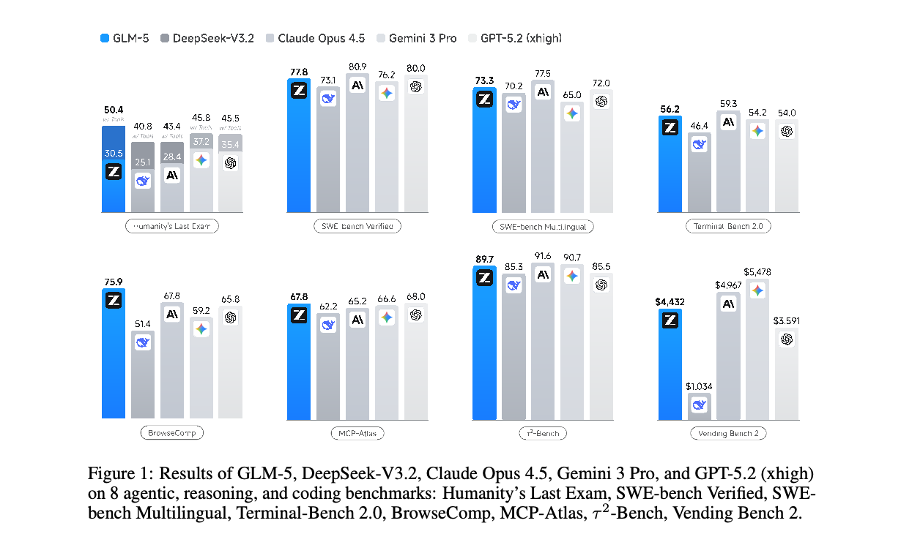
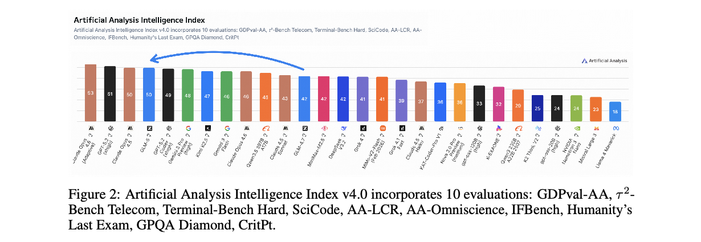
1 引言
追求 AGI，不仅需要扩大模型参数规模，还需要从根本上重新思考智能的效率与自主改进的架构。随着 GLM-4.5 的发布，我们展示了将 agent、推理与编码（ARC）能力整合到单一 MoE 架构中，可以在不同基准测试上获得最先进的结果。然而，随着 LLM 从被动的知识存储库转变为主动的问题解决者，计算成本与真实世界适应性这两项挑战，尤其是在复杂软件工程中的挑战，已经成为主要瓶颈。
我们推出了 GLM-5，这款新一代旗舰模型旨在突破这些障碍。GLM-5 在性能与效率上都代表着范式转变，在 ArtificialAnalysis.ai、LMArena Text 和 LMArena Code 等主要公开排行榜上达到最先进水平。更重要的是，GLM-5 重新定义了真实世界编码的标准，展现出处理复杂端到端软件开发任务的前所未有的能力，远超 SWE-bench 等传统静态基准测试的范围。
结果。图 1 展示了 GLM-5、GLM-4.7、Claude Opus 4.5、Gemini 3 Pro 和 GPT-5.2（xhigh）在 8 个 agent、推理与编码基准测试上的结果：Humanity’\(s\) Last Exam [34]、SWE-bench Verified [19]、SWE-bench Multilingual [53]、Terminal-Bench 2.0 [45]、BrowseComp [50]、MCP-Atlas [6]、\(\tau ^{2}\)-Bench [55; 7]、Vending Bench 2 [3]。平均而言，GLM-5 相比上一版本 GLM-4.7 提升约 20%，与 Claude Opus 4.5 和 GPT-5.2（xhigh）相当，并优于 Gemini 3 Pro。
GLM-5 在 Intelligence Index v4.0 上获得 50 分，成为新的开放权重模型领先者（见图 2），较 GLM-4.7 的 42 分提升了 8 分，这一跃升来自 agent 表现以及知识／幻觉方面的改善。这是开放权重模型首次在 Artificial Analysis Intelligence Index v4.0 上达到 50 分。
由加州大学伯克利分校发起的 LMArena，是一个透明的共享空间，通过人类对数百万项真实任务的判断，评估和比较前沿 AI 能力，任务包括写作、编码、推理、设计、搜索与创作。大量人类交互产生了反映真实世界实用性的信号，使其有别于其他静态基准测试。图 3 显示，GLM-5 再次在 Text Arena 和 Code Arena 中成为排名第一的开放模型，整体上与 Claude-Opus-4.5 和 Gemini-3-pro 相当。
Agent 的长期连贯性变得越来越重要。编码 agent 现在可以连续数小时自主编写代码，AI 模型能够完成的任务，其持续时间和广度也很可能继续增加。我们使用 Vending-Bench 2 和 CC-Bench-V2 两个基准测试，评估 GLM-5 完成长程任务的能力。Vending-Bench 2 用于衡量 AI 模型在长期经营业务方面的表现。模型的任务是经营一家模拟自动售货机企业一年，并根据最终银行账户余额评分。图 4（左）显示，GLM-5 在所有开源模型中排名第一，最终账户余额为 4,432 美元。它接近 Claude Opus 4.5，展现出强大的长期……
（句子接下一页。）
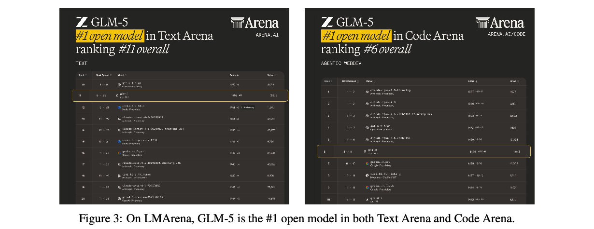
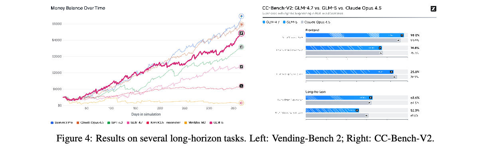
……规划与资源管理能力。图 4（右）进一步展示了我们内部评测套件 CC-Bench-V2 的结果。GLM-5 在前端、后端和长程任务上都显著优于 GLM-4.7，缩小了与 Claude Opus 4.5 的差距。
方法。图 5 展示了 GLM-5 的整体训练流程。基础模型训练从一个规模达 27 万亿 token 的语料库开始，早期优先关注代码与推理。随后，我们采用独立的中期训练阶段，将上下文长度逐步从 4K 扩展到 200K，特别关注长上下文 agent 数据，以确保模型在复杂工作流中的稳定性。在后训练阶段，我们超越了标准 SFT。我们实施了一条顺序进行的强化学习流程：先进行推理强化学习，再进行 agent 强化学习，最后进行通用强化学习。关键的是，我们在整个过程中使用 on-policy 跨阶段蒸馏，防止灾难性遗忘，确保模型在成为稳健的通用模型时，仍保有敏锐的推理优势。概括而言，GLM-5 的性能跃升由以下技术贡献推动：
首先，我们采用 DSA（DeepSeek Sparse Attention）[9]，这是一项显著降低训练与推理成本的新架构创新。GLM-4.5 通过标准 MoE 架构提高效率，而 DSA 使 GLM-5 可以根据 token 的重要性动态分配 attention 资源，大幅降低计算开销，同时不损害长上下文理解或推理深度。借助 DSA，我们将模型参数规模扩大到 744B，并将训练 token 预算扩展到 28.5T。
其次，我们构建了一套新的异步强化学习基础设施。在“slime”框架及 GLM-4.5 引入的解耦 rollout 引擎基础上，新基础设施进一步将生成与训练解耦，以最大化 GPU 利用率。该系统支持对 agent 轨迹进行大规模探索，消除了此前阻碍迭代速度的同步瓶颈，显著提升了强化学习后训练流程的效率。
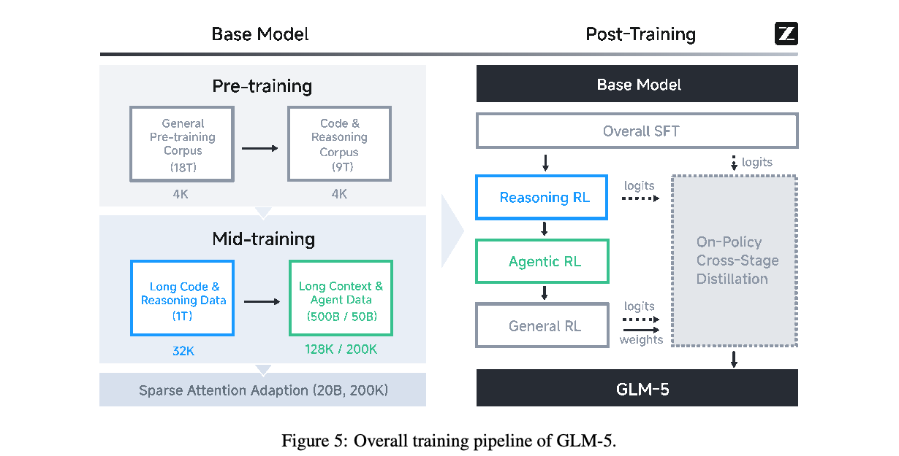
第三，我们提出新的异步 agent 强化学习算法，旨在提高自主决策的质量。在 GLM-4.5 中，我们使用迭代式自蒸馏和结果监督训练 agent。对于 GLM-5，我们开发了异步算法，使模型可以持续从多样化的长程交互中学习。这些算法专门针对提高模型在动态环境中的规划与自我纠错能力进行优化，直接促成了我们在真实世界编码场景中的领先表现。
最后，另一项技术贡献是：从第一天起，GLM-5 就对中国 GPU 生态进行了全栈适配。我们已在华为昇腾、摩尔线程、海光、寒武纪、昆仑芯、沐曦和燧原这七个主流国产芯片平台上完成深度优化，覆盖底层内核到上层推理框架。
凭借这些进展，GLM-5 不仅成为更强大的模型，也为下一代 AI agent 提供了更高效、更实用的基础。我们向社区发布 GLM-5，以进一步推进高效、具备 agent 能力的通用智能前沿。
2 预训练
与 GLM-4.5 类似，GLM-5 的基础模型经历两个阶段：预训练用于获得通用语言与编码能力，中期训练用于获得 agent 与长上下文能力。我们扩大了 GLM-5 所有训练阶段的 token 预算，基础模型累计训练 28.5 万亿 token。
2.1 架构
模型规模扩展。GLM-5 扩展到 256 个专家，并将层数减少到 80，以尽量降低 EP 的通信开销。这使模型拥有 744B 参数（激活参数为 40B），总规模是 GLM-4.5 的两倍；后者的总参数为 355B，激活参数为 32B。
多潜变量 attention。通过使用缩减的键值向量，多潜变量 attention（MLA）[24] 可以达到 GQA 的效果，同时在长上下文序列上提供更好的 GPU 显存节省与更快的处理速度。
然而，在使用 Muon 优化器的实验中，我们发现，具有 576 维潜变量 KV-cache 的 MLA 无法达到具有 8 个查询组的 GQA（记为 GQA-8，KV-cache 为 2048……
（句子接下一页。）
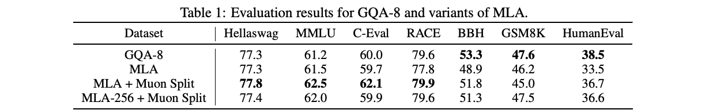
……维）的性能。为了弥合性能差距，我们对 GLM-4.5 中 Muon 优化器的配置方案提出一种调整。原始方案对多头查询、键和值的上投影矩阵 \(W^{UQ}\)、\(W^{UK}\)、\(W^{UV}\) 进行矩阵正交化。我们改为将这些矩阵拆分成不同 attention 头对应的小矩阵，并对这些独立矩阵分别进行正交化。这种方法记为 Muon Split，使不同 attention 头的投影权重可以按不同尺度更新。如表 1 所示，该方法有效提高了 MLA 的性能，使其与 GQA-8 相当。在实践中，我们还发现，使用 Muon Split 后，GLM-5 的 attention logits 尺度在预训练期间保持稳定，无须任何裁剪策略。
MLA 的另一缺点是 decoding 期间计算成本较高。Decoding 时，MLA 进行 576 维点积计算，高于 GQA 的 128 维计算。DeepSeek-V3 中 attention 头的数量依据 H800 的 roofline 选择 [60]，但该选择不适合其他硬件。鉴于 MLA 在训练和 prefill 期间采用 MHA 形式，我们将头维度从 192 增加到 256，并将 attention 头数量减少 1/3。这保持了训练计算量与参数数量不变，同时减少了 decoding 计算量。表 1 中记为 MLA-256 的变体，在 Muon Split 下达到与 MLA 相当的性能。
采用参数共享的 MTP
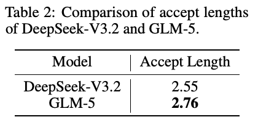
MTP[13; 25] 可以提高基础模型性能，并在 speculative decoding 中充当草稿模型 [20]。然而，训练期间若要预测后续 n 个 token，需要 n 个 MTP 层。因此，MTP 参数与 KV-cache 的显存占用随推测步数线性增长。DeepSeek-V3 则仅训练一个 MTP 层，并在推理时预测后续 2 个 token。训练与推理之间的差异降低了第二个 token 的接受率。因此，我们提出在训练期间共享 3 个 MTP 层的参数。这使草稿模型的显存成本与 DeepSeek-V3 一致，同时提高接受率。表 2 显示，在我们的私有提示词集合中，采用相同推测步数（4）时，GLM-5 的接受长度比 DeepSeek-V3.2 更长。
2.1.1 采用 DeepSeek Sparse Attention（DSA）的持续预训练
我们在训练中使用 DSA。DSA [9] 的核心思想，是用动态、细粒度的选择机制，取代传统的稠密 \(O(L^{2})\) attention；后者在 128K 上下文下成本高得难以承受。与滑动窗口等固定模式不同，DSA 会“查看”内容来决定哪些 token 重要。从研究者的角度看，DSA 特别有意思的一点，是它通过对稠密基础模型进行持续预训练而引入。这避免了从头训练的“天文数字”般成本。转换遵循两阶段的“稠密 warmup 与稀疏训练适配”策略。DeepSeek-V3.2-Exp 保持了……
（句子接下一页。）
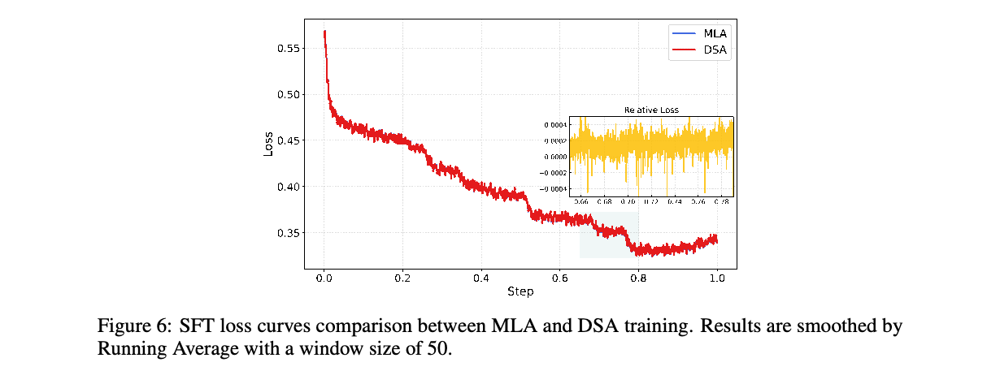
……与其稠密前代模型相同的基准性能，证明长上下文中 90% 的 attention 条目确实是冗余的。对于长序列，DSA 将 attention 计算量降低约 1.5–2 倍，这对我们正在构建的重推理 agent 非常重要，使其能够以一半的 GPU 成本处理 128K 上下文。
DSA 训练从中期训练结束时的基础模型开始。Warmup 阶段进行 1000 步，每步训练 14 条长度为 202,752 token 的序列，最大学习率为 5e-3。稀疏适配阶段沿用中期训练的数据与超参数，训练 20B token。尽管训练预算远小于 DeepSeek-V3.2（943.7B token），我们发现它足以让 DSA 模型适配到与原始 MLA 模型相当的性能。如表 3 所示，DSA 模型的长上下文性能接近 MLA 模型。为了进一步验证 DSA 训练的有效性，我们分别用相同的 SFT 数据微调 DSA 和 MLA 模型，发现二者在训练损失与评测基准上持平。
2.1.2 高效 Attention 变体的消融研究
除 DSA [26] 外，我们基于 GLM-9B1 探索了几种替代性高效 attention 机制。基线在全部 40 层使用 GQA，并已在 128K token 的上下文窗口下微调。我们评估以下方法：
- SWA 交错：在整个网络中统一应用全 attention 层与窗口 attention 层固定交替的模式。
- Gated DeltaNet（GDN）[54]：一种线性 attention 变体，以带门控的线性递推取代二次复杂度的 softmax attention 计算，将 attention 计算成本从序列长度的二次复杂度降为线性复杂度。
在这些基线基础上，我们提出两项改进：
- SWA 模式（基于搜索）：受 PostNAS [15] 启发，我们引入基于搜索的适配方法，识别最适合转换为 SWA 的层子集，其余层保留全 attention。我们使用束搜索策略确定能够最大化长上下文下游任务性能的配置。为了减少计算成本，我们仅在 16K 上下文长度下搜索，并将所得模式推广到其他所有输入长度。具体而言，束宽为 8，每步优化两层；对于 GLM-9B（40 层），约 10 步即可收敛。每步在 16K 上下文长度的 RULER 基准 [17] 上评估候选模式，并保留前 8 个候选用于下一步。最终得到的模式为
SFSSFFSSSFFFFSSFSFFFFFFSFSFSSFSSFSFSSFSSS，其中 S 和 F 分别表示 SWA 层与全 attention 层。如表 4 所示，该搜索配置显著优于固定交错方法。值得注意的是，尽管仅在 16K 下优化，……
（列表项接下一页。）
1 我们 GLM-4 系列中的一个模型，见 https://github.com/zai-org/GLM-4。
……该模式仍表现出稳健的长度泛化能力，在所有测试的上下文长度上都保持有效。
- SimpleGDN：一种极简线性化策略，旨在最大限度复用预训练权重，并改进 GDN 的持续训练适配。我们完全移除 Conv1d 与显式门控模块，直接将预训练的 Query、Key 和 Value 投影权重映射到线性递推形式。这种简化消除了新增参数的需求，同时保留线性 attention 的效率优势。
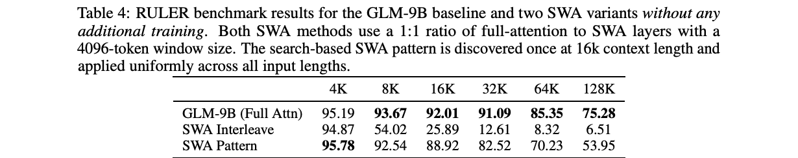
我们在四个长上下文基准上评估所有方法：RULER [17]、MRCR2、HELMET-ICL [56] 和 RepoQA [27]。结果汇总于表 5。我们以 64K 上下文长度对每种方法持续训练 190B token，保持高效 attention 层与全 attention 层 1:1 的比例。对于 GDN 和 SimpleGDN 方法，我们遵循 Jet-Nemotron [15] 的流程。
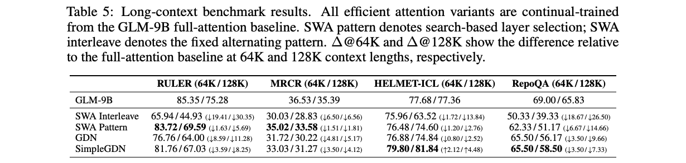
表 5 的结果揭示了高效 attention 方法之间清晰的权衡层次。直接交错的 SWA 导致长上下文任务性能灾难性下降（例如 RULER@128K 下降 30.35），而基于搜索的层选择通过在关键位置保留全 attention，大幅缩小了这一差距。GDN 等线性 attention 变体进一步提高质量，但代价是新增参数；SimpleGDN 通过最大限度复用预训练权重，达到了最佳平衡。尽管如此，所有这些方法在细粒度检索任务上都存在固有的精度差距：RULER@128K 最多下降 5.69 分，RepoQA@128K 最多下降 7.33 分。这是持续训练适配中高效 attention 机制引入不可避免的信息损失所致，即便半数层保留全 attention 也不例外。相比之下，DSA 的构造本身是无损的：它的 lightning indexer 实现 token 级稀疏性，不丢弃任何远距离依赖，因此可应用于所有层且不降低质量。
为验证这一点，我们在采用多潜变量 attention 的 GLM-4.7-Flash3 上开展小规模 DSA 实验。遵循标准 DSA 方案，训练分为两个阶段：（\(i\)）warmup 阶段冻结所有基础模型权重，仅训练索引器 1,000 步（batch 大小 16）；（ii）联合训练阶段在 150B token 上共同训练模型与索引器。表 6 汇总了从 4K 到 128K 上下文长度的 RULER 结果。即便仅 warmup 的变体（GLM-4.7-Flash + DSA warmup），也已保留基线性能的绝大部分；下降较小，且集中在最长上下文窗口（128K：79.21 → 71.35），较短上下文几乎不受影响。完成全部 150B token 的……
（句子接下一页。）
2 https://huggingface.co/datasets/openai/mrcr
3 https://huggingface.co/zai-org/GLM-4.7-Flash
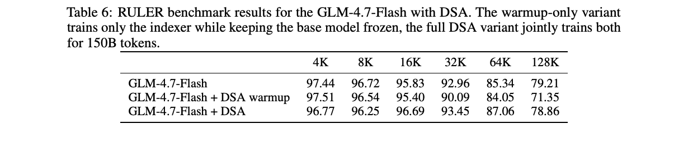
……联合训练阶段后，GLM-4.7-Flash + DSA 几乎弥合了全部剩余差距：它在 16K（+0.86）、32K（+0.49）和 64K（+1.72）下超过基线，在 128K 下仅低 0.35 分。
2.2 预训练数据
网页。在 GLM-4.5 数据流程的基础上，我们改进了大规模网页数据集的筛选标准。我们引入另一个基于句子 embedding 的 DCLM [21] 分类器，识别并汇集标准分类器之外的额外高质量数据。为应对长尾知识挑战，我们使用通过 Wikipedia 条目与 LLM 标注数据优化的世界知识分类器，从原本中低质量的数据中提取有价值的信息。
代码。我们用主要代码托管平台更新后的快照及更多包含代码的网页，扩充代码预训练语料，使模糊去重后的唯一 token 数量增加了 28%。为改善语料完整性并减少噪声，我们修复 Software Heritage 代码文件中的元数据对齐问题，并采用更准确的语言分类流程。对于源代码与代码相关网页文档，我们沿用 GLM-4.5 的质量感知采样策略。此外，我们为更广泛的低资源编程语言（如 Scala、Swift、Lua 等）训练专用分类器，提高这些语言的采样质量。
数学与科学。我们从网页、书籍与论文中收集高质量数学和科学数据，进一步增强推理能力。具体而言，我们改进网页内容提取流程以及书籍和论文的 PDF 解析机制，以提高数据质量。我们采用 LLM 对候选文档评分，仅保留最具教育价值的内容。对于长上下文文档，我们开发了分块后聚合的评分算法，提高评分准确性。筛选流程严格避免使用合成数据、AI 生成数据或基于模板的数据。
2.3 中期训练
在 GLM-4.5 引入的中期训练框架基础上，我们扩大 GLM-5 的训练量和最大上下文长度，进一步增强模型的推理、长上下文与 agent 能力。
扩展上下文与训练规模。我们分三个阶段逐步扩展上下文窗口：32K（1T token）、128K（500B token）和 200K（50B token）。相比 GLM-4.5 的最大 128K，新增的 200K 阶段显著提高了模型处理超长文档和复杂多文件代码库的能力。相应地，后期阶段对长文档和合成 agent 轨迹增加采样权重。
软件工程数据。我们保留将仓库级代码文件、提交差异、GitHub issue、pull request 和相关源文件拼接成统一训练序列的范式。在 GLM-5 中，我们放宽仓库级筛选标准，扩大符合条件的仓库范围，得到约 1,000 万对 issue–PR，同时加强单个 issue 层面的质量筛选以降低噪声。我们还为每对 issue–PR 检索更多相关文件，提供更丰富的开发上下文，更广泛地覆盖真实世界软件工程场景。筛选后，数据集中 issue–PR 部分包含约 160B 唯一 token。
长上下文数据。我们的长上下文训练集同时包含自然数据与合成数据。自然数据来自通用预训练语料中的书籍、学术论文和文档，采用多阶段筛选（PPL、去重、长度），并提高知识密集领域的采样权重。在合成数据构建中，受 NextLong [11] 和 EntropyLong [18] 启发，我们采用多种技术构建远距离依赖。通过交错打包汇集高度相似的文本并生成序列，旨在缓解“中间信息丢失”现象，提高各种长上下文任务的表现。在 200K 阶段，我们还加入少量类似 MRCR 的数据，设计多个变体扩展 OpenAI 的原始范式，以增强长多轮对话中的召回。实验发现，逐步增加数据多样性会改善模型的长上下文表现；尤其是，在初始 128K 阶段之后继续进行 200K 中期训练，甚至进一步提升了模型在 128K 上下文窗口内的表现。
2.4 训练基础设施
2.4.1 内存效率
灵活放置 MTP。在交错 PP [31] 下，模型组件可以灵活分配到各阶段。MTP 模块涉及 embedding、Transformer 和输出组件。其内存占用明显高于其他模块，造成阶段间不平衡。我们将 MTP 输出层与主输出层同置于最后阶段，实现参数共享，同时将其 embedding 和 Transformer 组件放在前一阶段。这降低了最后阶段的内存压力，改善了流水线各 rank 之间的平衡。
流水线 ZeRO2 gradient 分片。每个流水线 rank 维护多个阶段 [31]；直接实现时，每个阶段都需要完整的 gradient 缓冲区，用于累积与优化器更新。受 ZeRO2 [38] 启发，我们在 DP rank 间对 gradient 分片，使每个阶段仅存储完整 gradient 的 1/dp。此外，我们每次仅为两个阶段保留完整累积缓冲区，并通过双缓冲复用。当一个阶段缓冲区在连续 micro-batch 中累积 gradient 时，前一阶段缓冲区的 gradient 同步并行执行。这将常驻 gradient 内存降低为各阶段的分片缓冲区，加上仅两个用于滚动累积的完整缓冲区，实践中不增加同步开销。
Muon 分布式优化器的零冗余通信。直接的 Muon 实现会在每个 DP rank 上 all-gather 全部模型参数，导致瞬时内存峰值与冗余通信。我们将 all-gather 限制为每个 rank 所拥有的参数分片，并让本地计算与分片通信重叠。这消除了冗余通信，显著降低了优化器相关的峰值内存开销。
流水线激活卸载。流水线 warmup 期间，前向执行先于反向传播推进，延长了中间激活的生命周期。我们在前向执行后将激活卸载到主机内存，并在反向执行前重新加载 [58]。卸载以层为粒度，进一步降低峰值内存占用。结合细粒度重计算，这基本消除了将激活常驻 GPU 显存的需求。卸载与重新加载调度为与计算重叠，同时避免与点对点通信及 MoE token 路由（分发与合并）争用。这显著减少了激活内存占用，开销接近于零。
按序列分块的输出投影以降低峰值内存。输出投影与交叉熵损失会带来瞬时内存开销：既要存储用于反向传播的激活，也要在损失计算时将其提升到更高精度。为降低这一开销，我们将输入序列划分为较小的块，在每个块上独立计算投影与损失，完成前向和反向传播并释放激活后，再处理下一块。因此，块数增加时峰值内存占用降低。选择合适的块数，可以减轻输出层内存压力，同时保持与不分块执行相当的性能。
2.4.2 并行效率
高效延后权重 gradient 计算。为了减少流水线气泡，我们将部分权重 gradient 计算移出关键路径并延后执行 [37]。细粒度延后结合优化的存储与通信重叠，可以提高吞吐量，同时将内存开销控制在有限范围内。
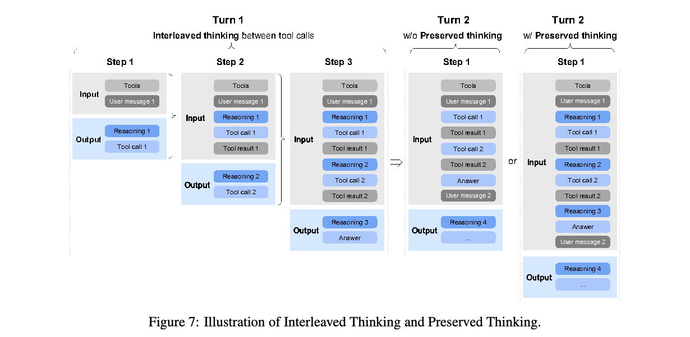
高效长序列训练。较长序列会加剧 DP 组和 PP 组之间的负载不平衡。我们通过感知工作负载的序列重排、attention 计算的动态再分配，以及将 DP rank 灵活划分为不同大小的 CP 组来解决这一问题 [12; 47]。分层 all-to-all 将 QKV 张量的节点内与节点间通信重叠，以降低延迟。
2.4.3 INT4 QAT
为在低精度下获得更好的准确性，我们在 SFT 阶段应用 INT4 QAT。此外，为进一步降低训练时间开销，我们开发了同时适用于训练和离线权重量化的量化内核，确保训练与推理之间的行为逐位一致。
3 后训练
GLM-5 的后训练阶段旨在将基础模型转化为具备强大推理、编码和 agent 能力的高水平助手。如图 5 所示，我们的流程遵循渐进式对齐策略：从引入复杂交错思考模式的多任务 SFT 开始，随后进行针对推理和 agent 任务的专门强化学习（RL）阶段，最后以面向人类风格对齐的通用 RL 阶段收尾。通过 on-policy 跨阶段蒸馏进行最终优化，GLM-5 在吸收各训练阶段性能收益的同时，有效缓解能力退化。
3.1 SFT
相比 GLM-4.5，GLM-5 在 SFT 阶段显著扩大 agent 与编码数据规模。GLM-5 的 SFT 语料覆盖三大类别：
- 通用聊天：问答、写作、角色扮演、翻译、多轮对话与长上下文交互；
- 推理：数学、编程与科学推理；
- 编码与 agent：前后端工程代码、工具调用、编码 agent、搜索 agent 和通用 agent。
此外，GLM-5 在 SFT 期间将最大上下文长度扩展到 202,752 token。结合更新后的聊天模板，模型支持三种不同的思考特性（见图 7）：
- 交错思考：模型在每次回答与工具调用前进行思考，提高指令遵循能力与生成质量4。
- 保留思考：在编码 agent 场景中，模型自动保留多轮对话中的全部思考块，复用已有推理，而非从头重新推导。这减少了信息损失与不一致，适用于长程复杂任务5。
- 轮次级思考：模型支持在一次会话内按轮次控制推理：对轻量请求关闭思考，以降低延迟／成本；对复杂任务启用思考，以提高准确性与稳定性。
通过在动作之间思考并保持跨轮次一致性，GLM-5 在复杂任务中实现了更稳定、更可控的行为。
对于通用聊天，我们优化回答风格，使其相比 GLM-4.5 更合乎逻辑、更简洁。对于角色扮演任务，我们收集并构建覆盖多种语言与角色配置的更广泛、更多样的数据集。具体而言，我们定义了指令遵循、语言表现力、创造力、逻辑连贯性和长对话一致性等多个评估维度，并同时采用自动与人工筛选来整理和改进数据。
对于推理任务，我们进一步增强模型的推理深度。具体而言，在逻辑推理方面，我们构建可验证的问题，并通过拒绝采样合成高质量数据。对于数学和科学问题，我们采用基于难度的筛选过程，仅保留对 GLM-4.7 有挑战的问题。
对于编码与 agent 任务，相比 GLM-4.5，GLM-5 构建了大量执行环境，以获取高质量轨迹，尤其强调真实世界场景与长程任务。我们进一步使用专家强化学习与拒绝采样改进 SFT 数据。轨迹中的错误片段被保留，但在损失函数中被掩码，使模型可以学习纠错行为，同时避免强化错误动作。
3.2 推理强化学习
强化学习算法骨干。我们的 RL 算法基于 GRPO [40]，并加入 IcePop 技术 [61] 来缓解训练与推理不匹配，即 RL 优化期间推理分布与训练分布之间的差异。我们明确区分用于 gradient 更新的训练策略 \(\pi _{train}\) 与用于轨迹采样的推理策略 \(\pi _{infer}\)。相比原始 IcePop 形式，我们移除 KL 正则项，以加快 RL 改进。最终优化损失为：
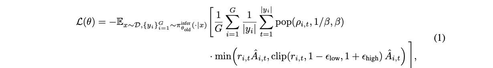
其中，训练与推理不匹配比率定义为：
4 交错思考最初由以下文档介绍：https://platform.claude.com/docs/en/build-with-claude/extended-thinking#interleaved-thinking。
5 Claude 自 Opus 4.5 起也采用保留思考。见 相关文档。
算子 pop(·) 会抑制不匹配比率偏离过大的样本：
PPO 风格的重要性比率与组内归一化优势遵循原始 GRPO 定义：
训练中，我们设置超参数 \(\beta = 2\)、\(\epsilon _{low} = 0.2\)、\(\epsilon _{high} = 0.28\)。训练完全采用 on-policy 方式，组大小为 32，batch 大小为 32。
DSA 强化学习经验。我们在采用 DSA 架构的模型上进行超大规模 RL 训练。相比 MLA，DSA 引入额外的索引器，检索最相关的 top-k 键值条目，并在检索得到的子集上计算稀疏 attention。检索得到的 top-k 结果对于 RL 稳定性至关重要。这类似于 MoE 模型利用路由重放 [62] 保留激活的 top-k 专家，以确保训练与推理一致。然而，将这一策略直接移植为索引器重放，即在每个 token 位置存储索引器的 top-k 索引，显然不切实际；因为索引器采用的 k = 2048 远大于 MoE 中通常使用的 k，存储所有这些索引会带来巨大的存储成本，以及训练引擎与推理引擎之间显著的通信开销。
我们发现，采用确定性 top-k 算子可以有效解决 DSA 索引器在 token 选择上的训练与推理不匹配。相比 SGLang 的 DSA Indexer 所使用的非确定性 CUDA top-k 实现，直接采用朴素的 torch.topk 略慢，但具有确定性。它产生更一致的输出，并带来显著的 RL 收益。相比之下，其他非确定性 top-k 算子（例如 CUDA 或 TileLang 实现）在仅几个 RL 步骤后便导致性能大幅退化，并伴随熵骤降。因此，在所有 RL 阶段中，我们都在训练引擎的 DSA Indexer 中采用 torch.topk 作为默认 top-k 算子。我们还默认在 RL 期间冻结索引器参数，以加快训练，避免索引器学习不稳定。
混合领域推理强化学习。在推理 RL 阶段，我们在数学、科学、代码与 tool-integrated reasoning（TIR）四个领域开展混合 RL 训练。对于数学与科学，我们从开源数据集 [10; 30] 及与外部标注供应商共同开发的数据中整理训练数据。我们进一步进行难度筛选，将训练重点放在 GLM-4.7 很少能答对或始终无法解决，但更强教师模型（例如 GPT-5.2 xhigh 与 Gemini 3 Pro Preview）仍能解决的问题上。对于代码，我们覆盖竞赛编程类任务与科学编码任务。前者主要来自 Codeforces 及 TACO [23]、SYNTHETIC-2-RL [35] 等代表性数据集；后者来自内部问题池，将问题分解成正确解答所需的最小代码实现。对于 TIR，我们复用数学与科学 RL 数据中更具挑战的子集，并与标注供应商共同构建明确设计为通过外部工具解答的 STEM 问题。在 RL 训练中，我们针对领域与数据来源分配相应的评判模型或评测系统，产生二元结果奖励。四个领域的总体混合比例大致保持平衡，并且在混合 RL 设置下，各领域都持续表现出稳定、显著的提升。
3.3 Agent 强化学习
为提升 GLM-5 的 agent 表现，我们开发完全异步、解耦的 RL 框架，并在编码 agent 与搜索 agent 任务上优化 GLM-5。直接的同步 RL 在长程 agent rollout 期间存在严重的 GPU 空闲。通过中央多任务 Rollout 编排器将推理与训练引擎解耦，我们实现了跨不同 agent 工作负载的高吞吐联合训练。
为保持异步 off-policy 条件下的训练稳定性，我们引入两项关键机制。首先，Token-in-Token-out（TITO）网关通过……
（句子接下一页。）
……保留精确的动作级对应关系，消除重新分词的不匹配。其次，我们采用直接双侧重要性采样，对 rollout 对数概率施加 token 级裁剪机制（\([1 - \epsilon _{\ell}, 1 + \epsilon _{h}]\)），无须追踪历史策略 checkpoint，即可高效控制 off-policy 偏差。我们还采用感知 DP 的路由，在大规模 MoE 模型的长上下文推理中最大化 KV-cache 复用，以提高速度。为扩展 agent 环境规模，我们在三个领域扩大可验证训练环境：超过 10K 个真实世界软件工程（SWE）环境、终端任务，以及高难度多跳搜索任务。Agent RL 的更多细节见后续第 4 节。
3.4 通用强化学习
多维优化目标。我们将通用 RL 的优化目标分解为三个互补维度：基础正确性、情感智能与任务特定质量。
基础正确性维度是回答质量的基石。它针对会损害模型输出可用性的广泛错误类型，包括指令遵循失败、逻辑不一致、事实不准确、知识幻觉与语言不流畅。目标是将错误率降到最低，使回答达到可用的基准线。我们认为这是所有后续优化的前提：包含事实错误或误解用户意图的回答，无论表面多么精美，都可能实际误导用户。
情感智能维度优化核心正确性之外的用户体验。它旨在生成具有同理心、有洞见、风格接近自然人类交流的回答，使与模型的交互更自然、更有吸引力。
任务特定质量维度针对各种具体任务进行细粒度优化。在基础正确性所建立的可用性之上，它旨在将每类任务的回答从仅仅正确提升到高质量。该维度覆盖写作、文本处理、主观与客观问答、角色扮演及翻译等广泛任务。每个任务领域都需要不同的奖励信号，因此需要混合奖励系统。
混合奖励系统。为了监督上述多样目标，我们构建一个混合奖励系统，整合三类互补奖励信号：基于规则的奖励函数、ORM 和 GenRM（GRM）。各自有不同的优缺点，组合使用是实现稳定、高效、可扩展通用 RL 训练过程的关键。
基于规则的奖励提供精确、可解释的信号，但仅限于能够表达为确定性规则的方面。ORM 提供低方差信号和较高训练效率，但更容易出现 reward hacking：策略利用表面模式，而非真正改善核心能力。GRM 利用语言模型产生标量或结构化评估，对此类投机更稳健，但往往具有更高方差。混合这三类信号，可得到兼顾精度、效率与稳健性的奖励系统，缓解单一组件的弱点。
人在环中的风格对齐。通用 RL 流程的一个特色，是显式纳入高质量人工撰写的回答。我们不只依赖模型生成的回答，还引入人类专家回答作为风格与质量锚点。其动机来自一个观察：纯粹由模型生成内容驱动的优化，往往收敛到可辨认的“模型式”模式，通常冗长、公式化，或缺乏熟练人类写作的细腻之处。通过让模型接触人类撰写的范例，我们鼓励它采用更自然、更符合人类习惯的回答模式。
3.5 On-Policy 跨阶段蒸馏
在多阶段 RL 流程中，按顺序优化不同目标，可能导致先前习得能力的累积退化。为缓解这一问题，我们将 on-policy 跨阶段蒸馏作为最后阶段，采用 OPD 算法 [14; 52; 51; 28]，迅速恢复早期 SFT 与 RL 阶段（推理 RL 和通用 RL）习得的技能。
具体而言，前面各训练阶段的最终 checkpoint 作为教师模型，训练提示词从对应教师的 RL 训练集中采样，并按适当比例混合。将公式 1 中的优势项替换为以下公式，即可得到训练损失（“sg”表示停止 gradient 操作，例如 .detach()）：
目前，我们通过推理引擎获取教师 logits。未来，我们计划将推理后端迁移到训练引擎，并统一采用 MLA 的 MQA 模式进行推理（\(\pi _{teacher}^{infer}\) → \(\pi _{teacher}^{train}\)）。训练中，GRPO 算法的组大小配置为 1，以提高数据吞吐量；batch 大小设置为 1024。这在该阶段可行，因为无须再为每个提示词维持大量样本来估计优势，优势直接由与教师模型之间的差距计算。
3.6 强化学习训练基础设施：slime 框架
我们继续使用 slime 作为 GLM-5 的统一后训练基础设施，实现大规模端到端强化学习（RL）。GLM-5 充分利用 slime 的能力：（1）通过自由形式的 rollout 定制和基于服务器的执行模型，拓宽任务覆盖；（2）通过混合精度训练／rollout、MTP 及 prefill 与 decoding（PD）分离，显著提高吞吐量，尤其是多轮 RL 工作负载；（3）通过心跳驱动的 rollout 容错与路由器级服务器生命周期管理，提高稳健性，而不引入新的系统组件。
3.6.1 横向扩展：通过高度可定制的 Rollout 灵活训练
GLM-5 的后训练覆盖多样化目标。为了支持这种多样性而不创建任务专用分支，GLM-5 利用 slime 高度可定制的 rollout 接口，以及基于服务器的 rollout 执行。
高度可定制的 Rollout。slime 提供灵活接口，用于实现任务特定的 rollout 逻辑，包括多轮交互循环、工具调用、环境反馈处理及验证器引导的分支，无须修改底层基础设施。GLM-5 利用这一能力，在统一训练栈中支持广泛领域与训练范式，包括但不限于推理 RL、通用 RL、agent RL 和 OPD。
通过 HTTP API 执行基于服务器的 Rollout。slime 通过标准 HTTP API 暴露 rollout 服务器与推理路由器，使用户可以像使用常规推理引擎一样与 slime 服务层交互。这将 rollout 逻辑从训练进程边界解耦：外部 agent 框架与环境可以直接调用服务器／路由器端点，而短程单轮训练与长程多轮轨迹的优化后端均保持一致。
3.6.2 纵向扩展：强化学习 Rollout 的尾延迟优化
对于 RL rollout，优化目标不是总吞吐量，而是端到端延迟；每步最慢的长尾样本主导该延迟。实践中，单条拖尾轨迹就可能阻塞同步点（例如 batch 完成、缓冲区就绪、训练器更新），直接决定实际耗时进度。因此，GLM-5 充分利用 slime 面向延迟的服务与调度机制，尽量降低中位延迟，以及更重要的尾延迟。
通过适用于 MLA 的 DP-attention 多节点推理实现无排队服务。为避免排队延迟，即使在突发流量下也必须及时服务 rollout 请求，这需要充足的 KV-cache 容量。GLM-5 采用多节点推理部署（例如在 8 个节点上使用 EP64 与 DP64），提供足够的分布式 KV-cache。引入 DP-attention 主要是为避免在不同 rank 间复制 KV。
通过 FP8 Rollout 与 MTP 降低尾延迟。GLM-5 使用 FP8 进行 rollout 推理，降低每 token 延迟，缩短长轨迹完成时间。此外，GLM-5 利用 slime 对 MTP 的支持，它在 RL rollout 常见的……
（句子接下一页。）
……mini-batchdecoding模式下尤其有效。尾延迟常由 batch 较小的拖尾样本驱动（例如少见的长上下文、复杂多轮推理、工具密集型轨迹），因此 MTP 对长尾带来的收益格外大，可缩短最慢样本的完成时间，进而减少步级停滞时间。
通过 PD 分离防止多轮强化学习中的 prefill 与 decoding 干扰。在多轮场景中，长前缀 prefill 很常见，包括对话历史、工具轨迹和代码上下文。在 DP-attention 下，将 prefill 与 decoding 混用同一服务资源可能造成严重干扰：繁重的 prefill 可能抢占或打断服务器上正在进行的 decoding，使其他样本无法持续推进，并显著恶化尾延迟。因此，GLM-5 利用 slime 的 prefill 与 decoding（PD）分离。让 prefill 与 decoding 运行在专用资源上，可使 decoding 保持稳定、不被打断，让长程样本持续推进，显著改善多轮 agent RL 的尾部表现。
3.6.3 Rollout 稳健性：心跳驱动的容错
在大规模运行中，短暂故障（例如个别服务器崩溃、网络问题或性能退化）不可避免。GLM-5 利用 slime 的心跳驱动容错，在这些事件下确保训练连续性：rollout 服务器定期发送心跳，由编排层监控；不健康的服务器被主动终止，并从推理路由器注销。因此，重试会自动避开故障或性能退化的服务器，路由到健康服务器，防止单服务器事故打断 rollout，保持端到端 RL 训练不间断。
4 Agent 工程
我们描述从 Vibe Coding（人类提供提示）到 agent 工程的转变。在 Vibe Coding 中，人类提示 AI 模型编写代码。在 agent 工程中，AI agent 自行编写代码：它们规划、实现并迭代。为支持这些长程任务，GLM-5 使用完全异步、解耦的 RL 框架，通过减少 agent rollout 期间的空闲时间，显著提高 GPU 利用率。为扩大 agent 环境规模，我们开发了环境构建流程。对于编码任务，我们创建超过 10,000 个可验证训练场景，建立真实世界的软件工程 issue 与终端任务。对于搜索 agent，我们开发自动、可扩展的复杂多步推理数据合成流程，构建 agent 训练数据。
4.1 Agent 任务的异步强化学习
为对 agent 任务开展 RL，我们设计完全异步、解耦的 RL 基础设施，高效处理长程 agent rollout，并支持在不同 agent 框架之间灵活进行多任务 RL 训练。
我们采用组级策略优化算法进行 RL 训练。对每个问题 \(x\)，从先前策略 \(\pi _{old}\) 采样 \(K\) 条 agent 轨迹 \(\{y_{1}, \ldots , y_{K}\}\)，并针对以下目标优化模型 \(\pi _{\theta}\)：
其中，\(\bar{r}(x) = (1/K) \sum _{i=1\ldots K} r(x, y_{i})\) 是采样回答的平均奖励。需要注意，只有模型生成的 token 用于优化，环境反馈不参与损失计算。
4.1.1 Agent 训练的异步强化学习设计
由于 rollout 过程的长尾特性，直接的同步 RL 训练会因 agent 任务生成严重不均衡而在 rollout 阶段产生大量气泡，造成 GPU 长时间空闲。为提高训练吞吐量，我们在 agent RL 中采用完全异步训练范式，提高 GPU 利用率与训练效率。具体而言，我们将训练引擎与推理引擎解耦到不同 GPU 设备上。推理……
（句子接下一页。）
……引擎持续生成轨迹。一旦生成轨迹数达到预设阈值，就将该 batch 发送到训练引擎以更新模型。为减少策略滞后并使训练近似 on-policy，rollout 引擎使用的模型权重定期与训练引擎同步。训练引擎更新模型参数，并在每 K 次 gradient 更新后将新权重推送回推理引擎。异步显著提高整体训练效率，但也意味着不同轨迹可能由不同模型版本生成，引入严重的 off-policy 问题。由于 rollout 策略变化，使权重更新面对的优化问题发生变化，我们还在每次推理引擎权重更新后重置优化器。
基于服务器的多任务训练设计。为应对多任务 RL 中轨迹生成的异质性，即不同任务通常依赖不同工具集与任务特定 rollout 逻辑，我们引入基于服务器的多任务 Rollout 编排器。该组件通过注册多个任务服务的中央编排器，确保 slime RL 训练框架与不同下游任务无缝兼容。具体而言，各任务将自己的 rollout 与奖励逻辑实现为独立微服务，并注册到中央编排器以供管理和调度。在 rollout 阶段，中央编排器控制各任务的 rollout 比例与生成速度，实现跨任务平衡的数据收集。关键的是，我们将所有 agent 任务的轨迹标准化为统一消息列表表示。这支持复杂 agent 框架（例如软件工程任务）的联合训练，并支持异质工作负载的集中后处理与日志记录。该设计清晰地将任务特定逻辑与核心训练循环隔离，从而无缝整合多任务 RL 训练。作为 GLM-5 训练基础设施的骨干，该编排器支持超过 1,000 个并发 rollout，能够自动动态调整任务采样比例，并细粒度监控任务进度。
4.1.2 优化异步训练稳定性
Token-in-Token-out 与 Text-in-Text-out。在 RL rollout 场景中，Token-in-Token-out（TITO）意味着训练流程获取推理引擎产出的精确分词结果与 decoding token 流，并直接用于构建学习轨迹。相比之下，Text-in-Text-out 将 rollout 引擎视为返回最终文本的黑箱；训练器在计算损失前，通过对该文本重新分词（通常还重新推导边界与截断位置）来重建轨迹。这个看似微小的选择影响重大：重新分词可能在 token 边界、空白／归一化处理、截断或特殊 token 放置上引入细微不匹配，进而破坏动作与奖励／优势之间的步级对齐，特别是 rollout 以流式输出、被截断，或在多个执行者之间交错时。我们发现，TITO 对异步 RL 训练至关重要，因为它保留采样内容与优化内容之间精确的动作级对应关系，同时允许执行者立即输出轨迹片段（token ID + 元数据），无须经历有损的文本往返转换，也无须等待学习端事后重新分词。实践中，我们实现 TITO Gateway，拦截来自 rollout 任务的全部生成请求，记录各轨迹的 token ID 与元数据。该设计将繁琐的 token ID 处理与下游 agent rollout 逻辑隔离，同时避免 RL 训练中的重新分词不匹配。
用于 token 裁剪的直接双侧重要性采样。与第 3 节的同步 RL 训练不同，在异步场景中，rollout 引擎可能在单条轨迹生成期间经历多次更新，使精确行为概率 \(\pi _{\theta old}\) 的追踪计算成本高得难以承受。否则，我们需要保存大量历史模型 checkpoint \(\{\pi _{\theta old(1)}, \ldots , \pi _{\theta old(N)}\}\)，这在实际实现中不可行。
为解决此问题，我们首先采用简化的 token 级重要性采样机制，复用 rollout 生成的对数概率作为直接行为代理。将重要性采样比率计算为 \(r_{t}(\theta ) = \pi _{\theta} / \pi _{rollout}\)，并弃用传统的 \(\pi _{\theta old}\)，可以消除单独旧策略推理的计算开销。其次，我们采用双侧校准的 token 级掩码策略。不同于标准 PPO 的非对称裁剪，我们将信赖域限定在 \([1 - \epsilon _{\ell}, 1 + \epsilon _{h}]\)，其中 \(\epsilon _{\ell}\) 与 \(\epsilon _{h}\) 为裁剪超参数。落在此区间之外的 token 完全从 gradient 计算中屏蔽，以防极端策略……
（句子接下一页。）
……偏离造成不稳定。这与 IcePop 机制 [44] 有相似之处，但我们的策略进一步移除了 \(\pi _{\theta old}\)，更简单，训练也更稳定。
形式上，带 token 级裁剪的优化目标可写为：
在这一表述中，重要性采样比率 \(r_{t}(\theta )\) 计算为：
通过校准函数 \(f(x; \epsilon _{\ell}, \epsilon _{h})\) 进一步保证稳定性：
在实验中，我们发现，复用 rollout 对数概率可以接受受控程度的 off-policy 偏差，从而避开历史策略追踪的需求，同时提高训练稳定性。
丢弃 off-policy 样本与噪声样本。异步 RL 中，过长轨迹可能高度偏离当前策略，造成训练不稳定。为过滤这些严重 off-policy 样本，我们记录 rollout 引擎在生成时使用的策略权重版本。具体而言，对每个回答记录涉及的模型版本序列 \((w_{0}, \ldots , w_{k})\)，其中 \(w_{0} < \ldots < w_{k}\)。令 \(w\)′ 表示当前策略版本。若样本最早的 rollout 版本过于陈旧，即 \(w\)′ \(- w_{0} > \tau\)（\(\tau\) 为预设阈值），则丢弃该样本。这样可移除相对当前策略滞后过多的轨迹。
此外，编码 agent 沙箱本身可能不稳定，会因与模型无关的原因（例如环境崩溃）而失败。此类失败反映环境不稳定，而非模型能力，因此引入有噪声的训练信号。为缓解此问题，我们记录每个样本的失败原因，并排除因环境崩溃而失败的样本。对于 GRPO 等基于组的采样方法，移除失败样本可能导致组不完整。此时，若有效样本数超过组大小的一半，我们通过重复有效样本补齐该组；否则丢弃整组。这一过程减少虚假的奖励噪声，改善训练稳定性。
感知 DP 的路由以加速。我们提出感知 DP 的路由机制，在大规模 MoE 推理的 DP 下保持 KV-cache 局部性。在多轮 agent 工作负载中，同一 rollout 的连续请求共享相同前缀。为最大化 KV 复用，我们施加 rollout 级亲和性：属于同一 agent 实例的全部请求都路由到相同 DP rank。具体而言，我们引入有状态路由层，用一致性哈希将每个 rollout ID 映射到固定 DP rank。该映射跨轮次保持稳定，消除跨 rank 缓存未命中。为防止长期不平衡，我们将哈希与哈希空间上的轻量动态负载再平衡结合。该设计避免了冗余 prefill 计算，无须在 DP rank 间同步 KV。随着 rollout 长度增加，prefill 成本始终与增量 token 成正比，而非与总上下文长度成正比。结果是长上下文 agent 推理的端到端延迟改善，有效吞吐量提高。
4.2 Agent 环境规模扩展
为支持多样化 agent 任务的强化学习，我们构建可验证、可执行的环境，为以代码为中心和内容生成工作流提供有实际依据的反馈。对于 agent 编码任务，我们开发两条环境构建流程：基于真实世界软件工程 issue 的环境搭建流程，以及终端 agent 环境合成流程。除编码外，我们还引入幻灯片生成环境，agent 在其中操作结构化 HTML，并通过可执行渲染与基于布局的验证进行检查。
4.2.1 软件工程（SWE）环境
构建可执行环境之前，我们收集大量真实世界的 Issue–Pull Request（PR）对，并进行严格的基于规则与 LLM 的筛选，以确保获得……
（句子接下一页。）
……真实、高质量的 issue 描述。我们将这些实例划分为修复缺陷、实现功能、重构等不同任务类型，并纳入必要的任务要求，确保模型实现与测试补丁一致。我们采用基于 RepoLaunch [59] 框架的环境搭建流程，规模化构建来自真实世界 SWE issue 的可执行环境。该流程自动分析仓库的安装与依赖配置，构建可执行环境并生成测试命令，再利用 LLM 根据测试输出生成适配语言的日志解析函数，提取 Fail-to-Pass（F2P）与 Pass-to-Pass（P2P）测试用例。借助这一流程，我们在数千个仓库中构建超过 10K 个可验证环境，覆盖 Python、Java、Go、C、CPP、JavaScript、TypeScript、PHP 和 Ruby 共 9 种编程语言。
4.2.2 终端环境
从种子数据合成。为规模化构建可验证的终端 agent 环境，我们设计由三个阶段组成的 agent 数据合成流程：任务草案生成、具体任务实现与迭代式任务优化。从真实世界软件工程及基于终端的计算机使用场景收集一组种子任务后，我们利用 LLM 进行头脑风暴，生成大量可验证终端任务草案。随后，构建 agent 将这些草案实例化为 Harbor [42] 格式的具体任务，包括结构化任务描述、Docker 化执行环境及相应测试脚本。之后，改进 agent 按照人工定义的评估准则，检查并迭代改进生成任务，确保 Docker 镜像能够可靠构建、测试用例与任务规范一致，以及环境对潜在利用漏洞或捷径具有稳健性。总体而言，该流程产生数千个多样、可验证的终端 agent 环境，Docker 构建准确率超过 90%。
从网页语料合成。我们开发可扩展的自动化流程，基于网页语料构建经 LLM 验证的终端编码任务，采用闭环设计，由构建 agent 同时充当自身的首轮评估者。首先，我们收集大规模代码相关网页语料，应用数据质量分类器，仅保留高质量内容，丢弃主要为非技术内容或缺乏实质代码内容的页面。在筛选后的子集中，进一步识别适合表述为终端式任务的网页。随后，我们按主题类别与难度进行分层采样，确保所得任务池的分布平衡与多样性。其次，我们向编码 agent 提供 Harbor 任务构建规范6（包括任务 schema、格式要求与示例任务），以及每个选定的源网页。要求 agent：（i）基于网页内容合成完整终端任务；（ii）对自己的输出执行 Harbor 验证脚本。若验证失败，agent 迭代诊断并修改任务，直到通过全部自动检查。只有成功通过该自验证循环的任务，才纳入最终数据集。
4.2.3 搜索任务
对于深度搜索的信息查找任务，我们构建数据合成流程，生成具有挑战性的多跳问答对。每个问题都需要基于多个网页来源汇集的证据，进行多步推理。
网页知识图谱（WKG）构建与问题生成。从早期搜索 agent 的轨迹出发，我们收集并去重所有遇到的 URL，保留超过 200 万个覆盖不同领域、信息丰富的网页。LLM 进行语义解析，用于实体识别、噪声过滤与结构化信息提取。WKG 持续用新网页更新，并利用下游验证信号，通过实体对齐、属性归一化、关系整合及语义一致性修正进行改进。基于 WKG，我们采样低频至中频实体作为种子节点，扩展其多跳邻域，形成完整子图，同时控制扩展以减少重叠。通过面向高难度、跨领域推理的提示词，将每个子图转化为隐含多实体关系链的问题。
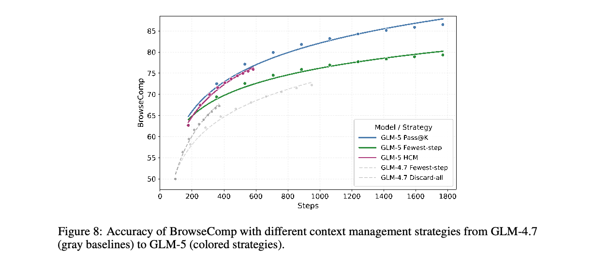
高难度问题筛选与验证。我们采用三阶段流程，平衡难度与正确性：（1）移除无工具推理模型在 8 次独立尝试中至少一次能正确回答的问题；（2）筛掉早期 agent 通过基本搜索、浏览与计算在少数步骤内即可解决的问题；（3）使用验证 agent 进行双向验证：收集第 2 阶段搜索轨迹中的候选答案，再独立验证候选答案与标注真实答案各自的问题–答案一致性，拒绝答案不唯一、证据不一致或标签错误的样本。由此得到高质量、高难度、可靠的多跳问答对。
4.2.4 搜索 Agent 的上下文管理推理
我们发现，BrowseComp [50] 的表现对评判提示词与评判模型都很敏感，开源评判模型可能引入系统性偏差。为确保一致性与可复现性，我们将全部基于评判的组件标准化，使用 OpenAI 官方评估提示词，以及专有模型 o3-mini 作为评判模型。案例研究表明，该配置与人类标注真实答案最一致，因此我们将其用于所有搜索 agent 评估。
先前工作 [26] 引入上下文管理，其中 Discard-all 通过移除全部工具调用历史来重置上下文。我们进一步观察到，在极长上下文（例如超过 100K token）下，模型准确率明显下降。受此启发，我们采用简单的 Keep-recent-k 策略。当交互历史超过阈值 \(k\) 时，折叠最近 \(k\) 轮以前的内容，以控制上下文长度。设轨迹为 \((q, r_{1}, a_{1}, o_{1}, r_{2}, a_{2}, o_{2}, \ldots , r_{n}, a_{n}, o_{n})\)，其中 \(q\) 为问题，\(r_{i}\) 为第 \(i\) 轮推理，\(a_{i}\) 为动作（我们设计了 search、open、find 和 python 4 个工具），\(o_{i}\) 为工具观察结果。我们仅折叠最近 \(k\) 轮之前的观察结果：\(o_{i} \leftarrow\) Tool result is omitted to save tokens.，\(i = 1, \ldots , n - k\)。实验中设置 \(k = 5\)，取得稳定提升，使 GLM-5 从 55.3%（不使用 keep-recent-k）提高到 62.0%（使用 keep-recent-k）。我们还发现，使用不同 keep-recent-k 值，或在上下文长度达到预设 token 阈值时触发 keep-recent，都会得到相同结果。
在此基础上，我们将 keep-recent 与 Discard-all 结合，形成混合的分层上下文管理策略。在使用 keep-recent 推理期间，若总上下文长度超过阈值 T，就丢弃全部工具调用历史，以新上下文重新开始，并继续采用 keep-recent 策略。通过参数搜索，我们选择 T = 32K。
如图 8 所示，在不同计算预算下，该策略有效释放上下文空间，使模型能够执行更多步骤，并持续提高性能。相比仅使用 Discard-all，与 keep-recent-k 结合在所有预算下都取得一致收益，最终得分达到 75.9，超过所有采用上下文管理的开源模型。
4.2.5 幻灯片生成
我们采用自我改进流程，通过强化学习与拒绝采样微调训练专门的幻灯片生成专家，旨在系统提高幻灯片生成表现。首先用 SFT 初始化模型，使其具备基本幻灯片生成能力，再采用基于演示幻灯片常见美学和结构属性的多层次奖励形式进行强化学习。该阶段显著提高生成质量。我们进一步进行拒绝采样微调与掩码微调，将强化学习阶段习得的知识注入训练语料。此过程以协调、迭代的方式共同提升数据质量与模型能力。
我们提出多层次奖励形式，将基于 HTML 的幻灯片生成过程中的奖励信号划分为三个层次：
第 1 层：静态标记属性。这一层关注生成 HTML 中的声明性属性，包括定位、间距、颜色、字体排版、饱和度及其他风格属性。基于专业设计原则，我们设计一组规则，规范模型生成这些声明的行为。规则确保生成 HTML 在语法上可解析，同时将标记层面的设计空间约束到针对表现力、结构清晰度、视觉和谐及可读性优化的子空间。此外，我们引入幻觉图像和重复图像检测机制，抑制虚构或冗余图片。
第 2 层：运行时渲染属性。不同于静态检查，该层评估渲染期间 DOM 节点的运行时属性，例如元素宽度与高度、边界框及其他几何布局指标。通过约束这些属性，我们鼓励生成幻灯片在空间组织上更接近人类审美偏好。我们开发分布式渲染服务，能够高吞吐执行渲染任务，同时提取所需运行时属性。训练中，我们观察到多种 reward hacking 行为，例如对过长内容进行硬截断，或过度操纵间距（见图 9）。为缓解这些问题，我们改进渲染器实现，消除可利用的漏洞，确保奖励信号真正激励美学上连贯的布局，而非仅在表面上满足几何指标。
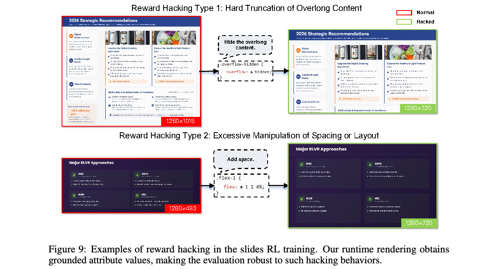
第 3 层：视觉感知特征。在运行时渲染约束之外，我们加入对渲染后幻灯片的感知层面评估。例如，检测异常留白模式作为辅助信号，进一步改善整体构图平衡与视觉美感。
训练策略。这些信号在 RL 中联合优化，以提高生成 HTML 的结构有效性、改善布局组织，并提升整体视觉美学质量。除了奖励设计，我们还通过动态采样重塑训练分布。具体而言，以一定概率丢弃部分结构简单的样本，让优化聚焦更具挑战的页面，提高复杂构图场景下的稳健性。我们还采用 token 级策略 gradient 损失，稳定优化过程 [57]。此外，我们引入平衡策略，将同一样本的不同 rollout 结果分配到多个训练 batch，减少优化偏差，提高训练稳定性。
拒绝采样。在拒绝采样阶段，RL 中使用的奖励函数转移到数据筛选流程，以构建高质量训练子集。页面级筛选标准包括代码有效性与可编译性。轨迹级进一步施加工具执行正确性与全局内容多样性约束，确保结构一致。我们采用 Best-of-N 选择策略，从多个独立生成的候选中保留质量最高的样本。该机制有效地提高了分布中高质量实例的权重，改善样本效率与训练稳定性。
基于掩码的改进。尽管拒绝采样移除了大多数低质量输出，一些轨迹的缺陷仅局限于少数页面。丢弃这些样本会降低有效数据利用率并增加生成成本。为此，我们引入基于掩码的纠正机制，自动识别有缺陷的页面并施加掩码，同时保留同一轨迹中的高质量内容。这种选择性改进保留有价值的监督信号，提高有效数据效率，减少冗余重新生成的开销，从而提升整体训练效率。
实证改进。严格遵守 16:9 宽高比的生成页面比例从 40% 提高到 92%，页面溢出情况也大幅减少。人工评估进一步表明，相比 GLM-4.5，GLM-5 在内容质量、布局合理性和视觉美学上的胜率分别达到 60%、57.5% 与 65%，整体胜率为 67.5%。这些结果为所提出的多层次奖励设计与自我改进框架的有效性提供了实证依据。
5 将 GLM-5 适配到中国芯片基础设施
由于硬件生态的异质性经常使高性能部署变得复杂，将 GLM-5 适配到不同中国芯片基础设施面临重大挑战。尽管存在这些障碍，通过与华为昇腾、摩尔线程、海光、寒武纪、昆仑芯、沐曦和燧原这七个主流中国芯片平台紧密合作，我们成功完成了 GLM-5 的全栈适配。本节以昇腾 Atlas 系列为案例，展示适配方法，聚焦三个核心支柱：极致量化、高性能内核融合与先进推理引擎调度。
混合精度 W4A8 量化。为将 750B 参数的 GLM-5 模型部署到单台 Atlas 800T A3 机器上，我们实现了精细的 W4A8 混合精度量化策略。使用 msModelSlim7 工具，对不同模型组件应用特定精度：标准 Attention 与 MLP 模块使用 W8A8（INT8），MoE 专家则压缩为 W4A8（INT4），大幅减少内存占用且无显著准确性损失。我们使用 QuaRot [2] 等先进算法抑制 outlier，并采用 Flex_AWQ_SSZ 进行缩放校准，以保持低比特部署的稳定性。
高性能融合内核。为突破昇腾 NPU 上稀疏 attention 的计算瓶颈，我们开发了一组定制融合内核：Lightning Indexer、Sparse Flash Attention 和 MLAPO（MLA 预处理优化）。Lightning Indexer 将分数计算、ReLU 和 TopK 操作整合到单个内核，使……
（句子接下一页。）
……NPU 能够将计算与内存访问重叠。对于 Sparse Flash Attention 内核，我们专门针对 GLM-5 的稀疏模式优化。该内核并行处理从 KV-cache 中选择 TopK token 与稀疏 attention 计算。最后，MLAPO 将 13 个小型预处理算子融合为一个“超级算子”，利用 Vector 与 Cube 单元之间的并行处理，提高端到端效率。
专门的推理引擎优化。我们适配两个领先推理引擎 vLLM-Ascend 与 SGLang，以最大化硬件利用率：
- 异步调度：在 vLLM 中，我们实现将“设备到主机”（D2H）采样拷贝与下一 decoding 步骤准备重叠的机制，有效消除调度“气泡”。
- 上下文管理：RadixCache（前缀共享）与 Prefix Cache（将 KV 存储扩展到系统 RAM）等特性，使 KV 条目可以高效复用，这对长上下文性能至关重要。
- 并行策略：我们采用结合attentionDP与 MoE EP 的混合方法，并结合 FlashComm，将 AllReduce 操作拆分，使计算掩盖通信延迟。
- MTP：每个推理步骤生成多个 token，显著提高 NPU 计算密度，减少序列生成总时间。
通过这些硬件层面的协同优化，单个中国芯片节点上的 GLM-5 达到与国际双 GPU 集群相当的性能，同时在长序列场景中将部署成本降低 50%。
6 评估
如上所述，GLM-5 标志着从 Vibe Coding 向 agent 工程新时代的转变。我们首先在 agent、推理和编码（ARC）基准上，将 GLM-5 与前沿模型比较。为全面评估 GLM-5 在真实世界 agent 工程场景中的表现，我们提出新的内部评测套件 CC-Bench-V2，包含前端、后端与长程任务。最后，我们评估 GLM-5 在五个常见真实世界场景中的通用能力。
6.1 ARC 基准评估
表 7 报告 ARC 基准的主要结果，将 GLM-5 与 GLM-4.7、DeepSeek-V3.2 [26]、Kimi-K2.5 [43]、Claude Opus 4.5 [1]、Gemini 3 Pro [8] 及 GPT-5.2（xhigh）[32] 比较。总体而言，GLM-5 相比 GLM-4.7 有显著提升，在开源模型中达到最先进水平，缩小了与 Claude Opus 4.5 等专有模型的差距。评估细节见 B.2 节。
6.1.1 推理与通用基准评估
对于推理与通用基准，我们评估 Humanity’s Last Exam（HLE）[34]、AIME 2026、HMMT 2025、IMO-AnswerBench [29]、GPQA-Diamond [39] 和 LongBench v2 [5]。对于 HLE，仅评估纯文本子集，并使用 GPT-5.2（medium）作为评判模型。大多数推理任务的最大生成长度为 131,072 token，HLE-with-tools 则使用最大 202,752 token。
从表 7 可见，GLM-5 在推理任务上达到与强开源基线 Kimi-K2.5 相当的表现。与专有模型相比，GLM-5 在 HLE（使用工具）上超过 Claude Opus 4.5 和 Gemini 3 Pro。相比前代 GLM-4.7，GLM-5 在 HLE 基准上（无论使用工具与否）也有显著提升。在 HMMT 2025 年 2 月／11 月基准上，GLM-5 优于 Claude Opus 4.5 和 Gemini 3 Pro。GLM-5 在长上下文任务上也取得显著进步，在长上下文推理基准 LongBench v2 上获得最高分之一，仅次于 Gemini 3 Pro。
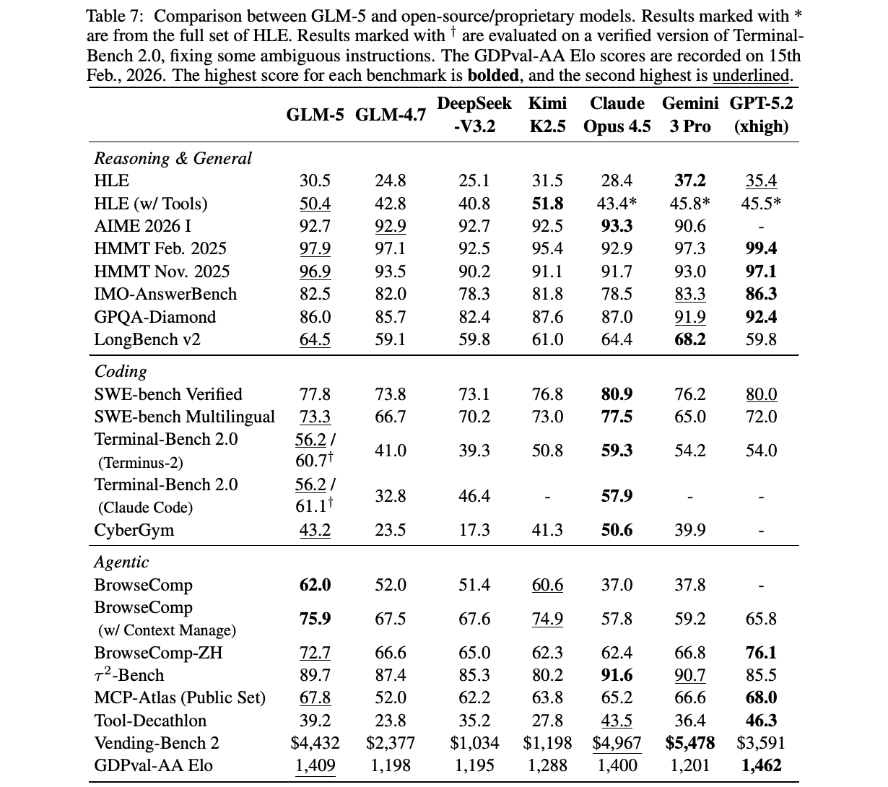
6.1.2 编码基准评估
对于编码基准，我们在 SWE-bench Verified [19]、SWE-bench Multilingual [53]、Terminal Bench 2.0 [45] 和 CyberGym [48] 上评估 LLM。对于 SWE-bench Verified 与 Multilingual，我们采用 OpenHands 框架，并为 GLM-5 定制指令提示词。对于 Terminal-Bench 2.0，我们使用两个 agent 框架（Terminus-2 与 Claude Code），并报告在经过验证、消除了部分含糊指令的 Terminal-Bench 2.0 上的表现8。CyberGym 基准在 Claude Code 2.1.18 中评估。
从表 7 可见，GLM-5 在编码基准上达到开源 LLM 中的最先进水平。与专有 LLM 相比，GLM-5 在 SWE-bench Verified 上优于 Gemini 3 Pro，在 SWE-bench Multilingual 上也超过 Gemini 3 Pro 与 GPT-5.2（xhigh）。在 Terminal-Bench 2.0 上，GLM-5 达到与 Claude Opus 4.5 相当的结果，在修正该基准的含糊指令后甚至取得更好结果。为展示编码能力的泛化，我们在两个 agent 框架中评估 Terminal Bench 2.0，GLM-5 在两个框架中都表现出一致的……
（句子接下一页。）
8 更多信息见 https://huggingface.co/datasets/zai-org/terminal-bench-2-verified。
……性能。在网络安全编码基准（CyberGym）上，GLM-5 相比 GLM-4.7 有显著提升，仅次于 Claude Opus 4.5。
6.1.3 Agent 能力评估
对于 agent 基准，我们在 BrowseComp [50]、BrowseComp-ZH [63]、\(\tau ^{2}\)-Bench [7]、MCP-Atlas [6]、Tool-Decathlon [22]、Vending-Bench 2 [3] 和 GDPval-AA [33] 上评估 GLM-5 与前沿模型。BrowseComp 衡量语言 agent 如何通过浏览网页解决有挑战的问题，BrowseComp-ZH 主要面向中文网络。我们在 BrowseComp 中采用 discard-all 策略进行上下文管理，与 DeepSeek-V3.2 和 Kimi K2.5 相同。\(\tau ^{2}\)-Bench 评估对话 agent 在双控制环境中的能力。我们对 Retail 与 Telecom 做少量提示词调整，避免因用户过早终止造成失败（见 B.3）。对于 Airline，我们采用 Claude Opus 4.5 系统卡 [1] 提出的领域修正，以获得更准确的结果。MCP-Atlas 是真实世界工具使用基准，评估在提供 Model Context Protocol（MCP）服务器时，LLM 在多步工作流中的表现。为公平比较，我们在包含 500 个任务的公开集上重新评估全部模型，将每任务超时从 4 分钟延长至 10 分钟，以避免部署条件导致的任务失败。MCP-Atlas 使用 Gemini 3 Pro 作为评判模型。Tool-Decathlon 也是工具使用基准，但面向真实世界长程任务。Vending-Bench 2 在模拟环境中，衡量 LLM 在长期商业场景下的 agent 能力，相比前代 Vending-Bench 加入更多真实世界因素。GDPval 关注 AI agent 在具有经济价值的任务上的表现。
表 7 显示，GLM-5 相比 GLM-4.7 在 agent 基准上显著提高。在 BrowseComp 上，无论是否采用上下文管理，GLM-5 都在前沿 LLM 中达到最先进水平。在 BrowseComp-ZH 上，GLM-5 也超过 Claude Opus 4.5 与 Gemini 3 Pro。对于三个工具使用 agent 任务（\(\tau ^{2}\)-Bench、MCP-Atlas 与 Tool-Decathlon），GLM-5 达到与 Claude Opus 4.5 相当的表现，展现出强大的工具使用能力。GLM-5 在 Vending-Bench 2 上的表现（4,432 美元），进一步证明其商业任务长程能力。在经济场景中，GLM-5 在 GDPval-AA 上优于 Claude Opus 4.5，仅次于 GPT-5.2（xhigh）。
6.2 真实世界 Agent 工程体验评估
真实世界体验比排行榜更重要。我们将内部 CC-Bench 升级为 CC-Bench-V2，评估模型是否能够在真实的 agent 工程环境中正确完成端到端任务，覆盖前端、后端与长程任务。CC-Bench-V2 完全取消人工标注，通过 Claude Code、其他 agent 运行框架、单元测试与 Agent-as-a-Judge 技术实现全自动评估。
前端。我们首先构建 agent 生成的前端项目，检查语法、依赖和兼容性错误。随后使用 Agent-as-a-Judge，通过配备 Playwright 与 bash 工具的 GUI agent 模拟用户交互，验证端到端正确性。
后端。任务来自使用 C++、Rust、Go、Java、TypeScript 和 Python 的真实世界开源项目，涵盖功能实现、缺陷修复、回归修复与性能优化。每项改动都必须在真实工程约束下通过完整单元测试。
长程。我们首先评估模型在大型代码库中的信息查找能力，这是像人类开发者一样定位正确文件、理解项目上下文的前提。随后，通过多步链式任务评估端到端正确性：挖掘具有大量提交历史的已合并 Pull Request，并将其提交聚类为连贯任务链。Agent 按顺序执行这些任务链，测试其保持上下文并解决阶段间依赖的能力。评估结合单元测试与 Agent-as-a-Judge，验证功能正确性与语义遵循。
6.2.1 前端评估：Agent-as-a-Judge
我们开发专门面向前端开发场景的全面自动化评测基准。该基准覆盖开发者……
（句子接下一页。）
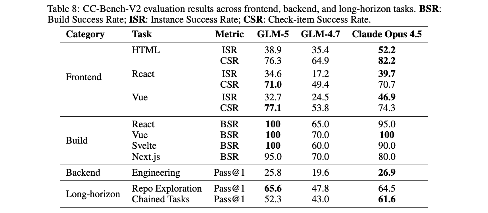
……日常构建的多样化应用，包括落地页、管理仪表盘、数据可视化、图形与动画、在线生产力工具、交互游戏和表单驱动工作流，覆盖 HTML、React、Vue、Svelte 与 Next.js 等主流技术栈。
每个测试用例由一项任务和对应检查清单组成；任务包含多项具体、可实现的规范，每个检查项都直接由相应规范导出。评估采用两阶段流程：（1）静态验证：先验证生成代码能否成功构建并运行；（2）Agent-as-a-Judge：对于正确执行的代码，使用 GUI agent 模拟人类测试行为，交互验证每项检查项，并按需求完成情况评分。我们定义以下指标：构建成功率（BSR）衡量成功初始化并运行的项目比例；实例成功率（ISR）衡量通过全部相关规范的项目比例；检查项成功率（CSR）衡量所有检查项上的细粒度完成率。数据分布、构建与验证过程的更多细节见附录 B.4.1。
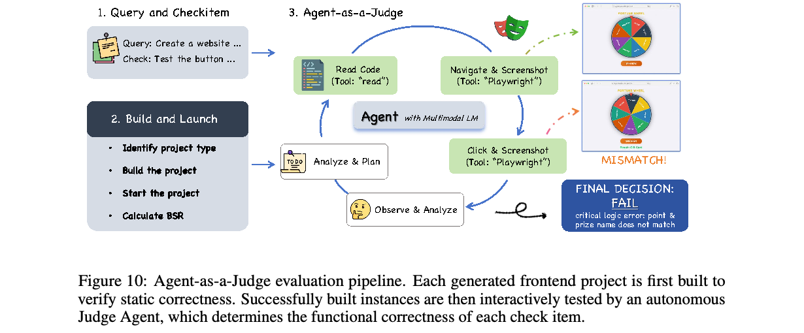
Agent-as-a-Judge。前端正确性本质上是视觉与交互性的：缺陷往往仅在人类用户点击按钮或调整窗口大小时暴露，因此静态分析和固定测试套件不足以验证。于是我们引入 Agent-as-a-Judge（图 10）：将每个生成项目部署……
（句子接下一页。）
……到 Docker 容器中，并构建以验证静态正确性。成功构建的实例随后交给自主评判 agent（使用 Claude Sonnet 4.5 的 Claude Code，配备 Playwright MCP 工具），以闭环方式执行：对每个检查项，agent 读取源代码、与实时 UI 交互（点击、按键、截图）、检查终端输出，并给出通过／失败判定。
为验证可靠性，我们从两个维度，将 Agent-as-a-Judge 判定与独立人类专家判断比较。对于逐项一致性，我们采样 130 个检查项，由人类专家独立评分，再与 agent 判定比较：二者在 94% 的项目上达成一致，分歧集中于主观视觉质量标准，而非功能规范。对于排名一致性，我们用自动框架与人类专家两种方式评估 8 个前沿模型（Claude Sonnet 4.5、Claude Opus 4.5、Gemini 3 Pro、GLM-4.7、DeepSeek-V3.2 等）。所得模型排名的 Spearman 相关性达到 85.7%，表明较强正相关。
如表 8 所示，GLM-5 的 BSR 达到 98.0%，CSR 与 Claude Opus 4.5 具有竞争力；但在全部三个技术栈上，ISR 仍存在明显差距，表明 GLM-5 满足大多数单项需求，但在端到端完成整个任务方面仍不及 Claude Opus 4.5。
6.2.2 后端评估
后端评估衡量编码 agent 能否在真实工程约束下，对真实世界服务端代码库做出正确、可通过测试的修改。我们整理 85 个任务，覆盖六种语言（Python、Go、C++、Rust、Java 和 TypeScript），涉及搜索引擎、数据库引擎、Web 框架、AI 推理服务、知识管理系统，以及独立算法与系统编程挑战等领域。任务类型包括功能实现、缺陷修复、回归修复与性能优化，反映日常后端开发的多样性。
为实现全自动评估，每项任务配备人工编写的单元测试（每任务 5–10 个），验证功能正确性与边界情况处理。任务采用 terminal-bench 风格打包：每个任务在由项目实际构建环境初始化的 Docker 容器中运行，agent 收到描述所需修改的自然语言问题说明。我们报告 Pass@1；仅当任务的全部相关单元测试通过，才视为解决。严格的全有或全无标准使这一基准尤其具有挑战性：GLM-5 与 Claude Opus 4.5 表现相当（表 8），二者均显著领先 GLM-4.7。
6.2.3 长程评估
长程评估关注区分生产级 agent 工程与单轮 Vibe Coding 的能力：在庞大代码库中导航，以及执行多步开发，每个动作都会重塑后续动作的上下文。我们将其分解为两个互补任务。
大型仓库探索。任何非平凡编码任务的前提，都是在大型陌生仓库中定位正确源文件的能力。我们在包含数万文件、真实且高星标的 GitHub 仓库上构建自动化基准。每个问题都在业务语义层面以面向用户的自然语言描述，严格避免提及文件名、类名或函数名。此外，从面向用户的描述到实际实现，需要一到两跳逻辑推理；例如，关于生成视频中口型同步错位的问题，会映射到视频生成后端内的参数调节模块。选择目标文件时尽量增加导航难度：文件至少位于三级目录深处，名称不直观，难以用关键词搜索；实现仓库中其他位置未重复的独特功能；且位于项目主要功能范围之外。我们报告三次运行的平均 Pass@1，当 agent 探索时成功读取目标文件，即视为问题已解决。在此任务中，GLM-5 超过 Claude Opus 4.5（表 8），二者远领先 GLM-4.7。结果表明，高效仓库探索较少依赖原始代码生成能力，更多依赖策略性搜索，即通过目录级推理与语义关联，迭代缩小文件范围；GLM-5 对 agent 工具使用轨迹的训练在这里提供了明确优势。
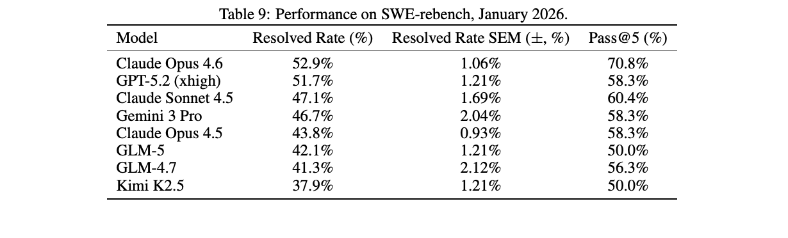
多步链式任务。SWE-bench 等主流编码基准将评估简化为单次提交、孤立编辑，因此无法评估 agent 进行增量开发的能力；在增量开发中，每步都会改变后续步骤所面对的代码库状态。为此，我们通过挖掘高质量仓库中已合并的 Pull Request，并按以下流程组装任务链，构建长程基准：
- PR 筛选。仅保留包含测试、具有 3–15 次提交、且遵循线性（无合并）历史的已合并 PR。
- 语义分组。LLM 对相邻提交之间的两两语义相关性评分；动态规划在保持提交顺序的同时，寻找连贯任务组的最优划分，最大化组内连贯性。
- 补丁分类。将每个任务的累积差异分成三类：标准补丁（agent 必须生成的核心代码）、测试补丁（验证测试）与自动应用补丁（自动应用的配置及测试夹具）。
- 问题描述生成。LLM 根据任务补丁和提交信息，为每项任务生成自然语言问题描述。
- 任务分类。任务自动分类为功能／缺陷修复／重构／测试／配置，并从消除错误、关键路径准确性与测试通过三个维度评估。
- 环境验证。构建 Docker 环境并应用标准补丁，验证整个任务链无回归。
给定包含 K 项任务的链，agent 从基础提交开始，按顺序工作：完成任务 k 后提交其修改，再应用任务 k+1 的自动应用补丁，使代码库状态累积演进。评估依次检查每次提交，运行完整测试套件前，累积应用任务 1 至 k 的测试补丁，同时捕捉当前任务失败与先前任务回归。我们报告单项任务的 Pass@1。这种链式、状态递归设计，直接评估单次提交基准未测试的远程上下文追踪、规划与增量开发能力。如表 8 所示，GLM-5 相比 GLM-4.7 显著提升，但与 Claude Opus 4.5 仍有较大差距。这是因为错误沿任务链叠加：某项任务中的次优编辑可能悄然破坏后续任务测试。缩小该差距需要在长上下文一致性与长程自我纠错上取得进展，二者都是我们正在积极研究的方向。
6.2.4 演进中的 SWE 任务评估
我们在 SWE-rebench [4] 上评估，因为 SWE-bench Verified 是静态、公开、经人工验证且已发布超过两年的测试集。相比之下，SWE-rebench 基于自动化流程，持续挖掘新的真实 GitHub issue 修复任务，支持去污染、对时间变化稳健的评估，更好地衡量对新软件工程问题的泛化，而非在静态基准上的表现。表 9 展示 GLM-5 在 SWE-rebench 上的官方成绩；我们观察到 GLM-5 可以有效泛化到新的 SWE 问题。
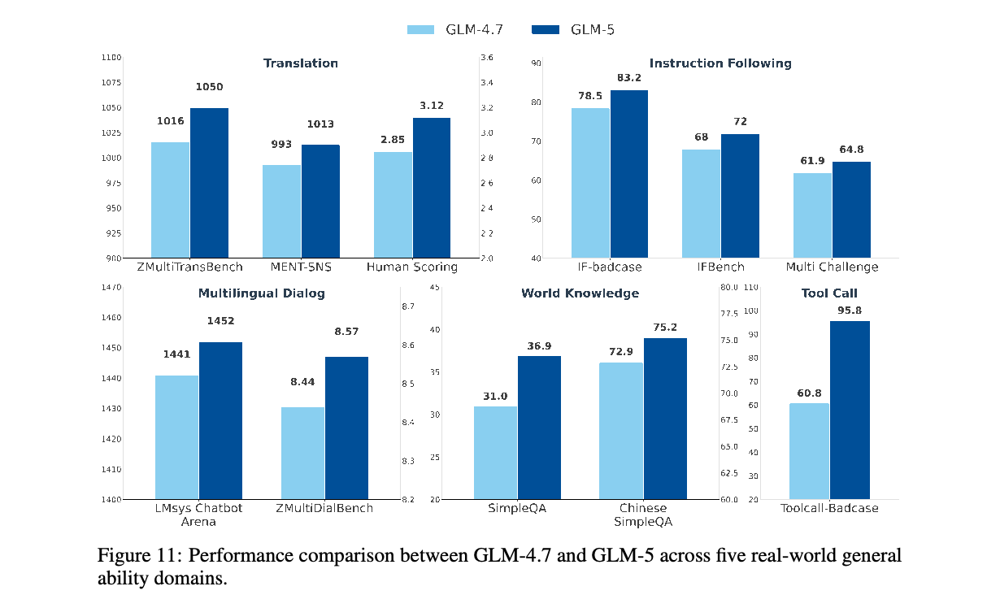
6.3 真实世界通用能力评估
标准化学术基准可以提供有用信号，但无法完整反映模型在实践中的使用方式。认识到这一差距后，我们根据部署场景中观察到的高频用户交互模式，评估 GLM-5 的一组真实世界通用能力。这些能力包括机器翻译、多语言对话、指令遵循、世界知识与工具调用。
不同于传统以基准为中心的评估，我们的目标是衡量直接转化为用户感知质量提升的改进。对于每项能力，我们结合内部人工评估、内部自动评估、外部人工评估与外部自动化基准，兼顾诊断粒度与跨模型可比性。使用外部基准时，我们优先选择反映真实交互模式的数据集，而非狭窄构造的测试分布。
图 11 展示 GLM-5 与 GLM-4.7 在五个真实世界能力领域的比较结果。在全部评估维度上，GLM-5 在机器翻译、多语言对话、指令遵循、世界知识与工具调用方面都表现出一致提升。各能力的详细评估协议与数据集说明如下。
6.3.1 机器翻译
ZMultiTransBench。这一内部数据集包含 1,220 个样本，来自自主收集的高频翻译场景，覆盖七种语言对：中文到西班牙语（300）、俄语（250）、法语（220）、韩语（200）、日语（150）、阿拉伯语（50）与德语（50）。所有样本均由接受过正规翻译学训练的研究生整理、翻译并独立验证。数据集强调自然发生的使用情境，而非人为构造的测试用例。评估采用与固定基线回答进行两两比较的方式。基于 GPT-4.1 的自动评估器进行判断，考察语义忠实度、流畅性与整体翻译质量。
MENT-SNS。为进一步评估语言上具有挑战的情境中的稳健性，我们采用 MENT [46] 的源句，包含跨四个领域的 753 对英汉句子：社交网络服务（SNS）、跨文化、诗歌与文学。选择这些领域，是为了对复杂语言现象下的翻译进行压力测试，包括俚语、谐音文字游戏、惯用表达、历史典故与隐喻语言。与 ZMultiTransBench 类似，所有样本均由接受专业训练的研究生整理并验证。评估采用相同的与基线回答进行两两比较的协议，GPT-4.1 作为自动评判模型。
6.3.2 多语言对话
LMArena。我们报告来自 LMArena9 的 Elo 评分，它们由大规模社区提交的两两比较得到。这些评分反映开放式对话场景下相对的模型偏好，提供对话表现的外部信号。
ZMultiDialBench。除公开排行榜外，我们还在内部多语言对话基准 ZMultiDialBench 上进行人工评估。数据集包含 141 个经过整理的实例，覆盖不同对话类别。样本来自多个国家的母语标注员贡献的高质量对话数据，以及在线用户报告的具有挑战性的失败案例。人工标注员根据各类别特定、标准化评估标准，对匿名模型回答按 1–10 分逐项评分。
6.3.3 指令遵循
IF-Badcase。IF-Badcase 是内部基准，由真实用户在生产场景报告的指令遵循失败案例构建。数据集用于评估对真实、多约束指令的严格遵循，强调程序性准确、逻辑一致与严格格式要求。评估采用详细的检查清单协议，验证对显式约束的遵守，包括有序步骤、基于规则的条件及结构规范。所有样本都经人类专家标注、审查与迭代筛选，最终得到 450 个整理后的测试实例。
IF-Bench [36]。IF-Bench 评估 LLM 遵守复杂、客观约束的能力，例如特定格式规则、长度限制与内容限制。它提供精确指令遵循能力的定量衡量，关注可验证的遵守情况，而非开放式生成质量。
MultiChallenge [41]。MultiChallenge 通过真实的多轮对话场景考察 LLM，面向需要准确指令遵循、上下文分配与上下文内推理的复杂交互。
6.3.4 世界知识
SimpleQA [49]。SimpleQA 通过具有唯一、无争议答案的挑战性问题衡量短回答的事实性。它将回答分类为正确、错误或未尝试，以评估模型校准，优先关注准确性而非生成长度。
Chinese SimpleQA [16]。该基准将 SimpleQA 方法适配到中文语境，评估六大领域、99 个子主题的事实性。它采用高质量、静态的简答题，设计为可靠自动评分，以评估 LLM 的知识准确性。
6.3.5 工具调用
ToolCall-Badcase。ToolCall-Badcase 是内部基准，源自用户在生产环境报告的工具调用失败案例。每个实例均关联一个可验证的标准工具调用，使工具选择与参数……
（句子接下一页。）
……正确性都可客观评估。评估考察模型是否：（1）调用正确工具；（2）提供结构正确、语义准确的参数。全部样本经过多轮审查、重写与验证，消除歧义并确保可评估性。最终数据集包含 200 个经过整理、反映真实工具调用能力的测试用例。
7 结论
本报告介绍了 GLM-5，这款新一代基础模型从根本上弥合了高性能推理与极高计算效率之间的差距。通过从“Vibe Coding”范式转向真正的“agent 工程”，GLM-5 表明，开放权重模型现在能够在复杂真实世界工作流中，与顶级专有系统的能力竞争。GLM-5 代表实用 AI 效用的范式转变。通过开源模型，我们希望赋能社区，超越静态基准，探索高效、具备 agent 能力的通用智能前沿，推动 AI agent 自主规划、实现并迭代复杂任务的新时代。
8 彩蛋
“Pony Alpha”实验对我们而言确实是一个关键时刻。匿名在 OpenRouter 上发布 GLM-5 是大胆决定，但结果令人极为振奋。去掉品牌名称后，我们让模型的内在能力自行证明自身，确保收到的反馈纯粹、无偏。以下是简要回顾：
几天之内，Pony Alpha 引发轰动。OpenRouter 社区开发者开始注意到它出色的表现，尤其是在复杂编码任务、agent 工作流和角色扮演场景中。
各种猜测甚嚣尘上，许多用户猜它是 Anthropic 等实验室泄露的更新（Claude Sonnet 5）、秘密发布的 Grok，或 DeepSeek V4。初步统计显示，25% 的用户猜它是 Claude Sonnet 5，20% 猜 DeepSeek，10% 猜 Grok，其余猜 GLM-5。
最终确认它确实是我们的 GLM-5，对我们而言意义深远，有效消除了关于中国 LLM 能否在前沿水平竞争的疑虑。Pony Alpha（GLM-5）的成功不只在于原始基准成绩；它标志着我们关注点向工程级可靠性的转变。
这次匿名发布使我们超越地缘政治偏见。社区接纳模型，是因为它确实好用。在庆祝成功的同时，我们必须保持务实。开放权重模型与专有模型最前沿之间的差距正在缩小，但竞争远未结束。我们依然坚定地专注于推动可扩展、高效、智能系统的能力边界。
9 贡献
贡献者姓名按名字的字母顺序排列。
核心贡献者
Chendi Ge, Chenghua Huang, Chengxing Xie, Chenzheng Zhu, Congfeng Yin, Cunxiang Wang, Gengzheng Pan, Hao Zeng, Haoke Zhang, Haoran Wang, Huilong Chen, Jiajie Zhang, Jian Jiao, Jiaqi Guo, Jingsen Wang, Jingzhao Du, Jinzhu Wu, Kedong Wang, Lei Li, Lin Fan, Lucen Zhong, Mingdao Liu, Mingming Zhao, Pengfan Du, Qian Dong, Rui Lu, Shuang Li (李爽), Shulin Cao, Song Liu, Ting Jiang, Xiaodong Chen, Xiaohan Zhang, Xuancheng Huang, Xuezhen Dong, Yabo Xu, Yao Wei, Yifan An, Yilin Niu, Yitong Zhu, Yuanhao Wen, Yukuo Cen, Yushi Bai, Zhongpei Qiao, Zihan Wang, Zikang Wang, Zilin Zhu, Ziqiang Liu, Zixuan Li
贡献者
Bojie Wang, Bosi Wen, Can Huang, Changpeng Cai, Chao Yu, Chen Li, Chengwei Hu, Chenhui Zhang, Dan Zhang, Daoyan Lin, Dayong Yang, Di Wang, Ding Ai, Erle Zhu, Fangzhou Yi, Feiyu Chen, Guohong Wen, Hailong Sun, Haisha Zhao, Haiyi Hu, Hanchen Zhang, Hanrui Liu, Hanyu Zhang, Hao Peng, Hao Tai, Haobo Zhang, He Liu, Hongwei Wang, Hongxi Yan, Hongyu Ge, Huan Liu, Huanpeng Chu, Jia’ni Zhao, Jiachen Wang, Jiajing Zhao, Jiamin Ren, Jiapeng Wang, Jiaxin Zhang, Jiayi Gui, Jiayue Zhao, Jijie Li, Jing An, Jing Li, Jingwei Yuan, Jinhua Du, Jinxin Liu, Junkai Zhi, Junwen Duan, Kaiyue Zhou, Kangjian Wei, Ke Wang, Keyun Luo, Laiqiang Zhang, Leigang Sha, Liang Xu, Lindong Wu, Lintao Ding, Lu Chen, Minghao Li, Nianyi Lin, Pan Ta, Qiang Zou, Rongjun Song, Ruiqi Yang, Shangqing Tu, Shangtong Yang, Shaoxiang Wu, Shengyan Zhang, Shijie Li, Shuang Li (李泷), Shuyi Fan, Wei Qin, Wei Tian, Weining Zhang, Wenbo Yu, Wenjie Liang, Xiang Kuang, Xiangmeng Cheng, Xiangyang Li, Xiaoquan Yan, Xiaowei Hu, Xiaoying Ling, Xing Fan, Xingye Xia, Xinyuan Zhang, Xinze Zhang, Xirui Pan, Xu Zou, Xunkai Zhang, Yadi Liu, Yandong Wu, Yanfu Li, Yidong Wang, Yifan Zhu, Yijun Tan, Yilin Zhou, Yiming Pan, Ying Zhang, Yinpei Su, Yipeng Geng, Yong Yan, Yonglin Tan, Yuean Bi, Yuhan Shen, Yuhao Yang, Yujiang Li, Yunan Liu, Yunqing Wang, Yuntao Li, Yurong Wu, Yutao Zhang, Yuxi Duan, Yuxuan Zhang, Zezhen Liu, Zhengtao Jiang, Zhenhe Yan, Zheyu Zhang, Zhixiang Wei, Zhuo Chen, Zhuoer Feng, Zijun Yao, Ziwei Chai, Ziyuan Wang, Zuzhou Zhang
技术负责人
Aohan Zeng, Xin Lv, Zhenyu Hou, Zhengxiao Du, Qinkai Zheng, Bin Chen, Da Yin
顾问
Jie Tang, Yuxiao Dong, Juanzi Li, Hongning Wang, Minlie Huang, Bin Xu
致谢
感谢联合发布合作伙伴与社区开发者给予的全部支持（按字母顺序排列）：
开源社区： Hugging Face, MLX, ModelScope, SGLang, Unsloth, vLLM, xLLM
推理服务提供商： Amazon Bedrock, Atlas Cloud, Baidu AI Cloud, Baseten, Cerebras, DeepInfra, Fireworks, FriendliAI, GMI Cloud, Google Cloud Vertex AI, Infinigence AI, Modal, Novita AI, Parasail, Phala, PPIO, SiliconFlow, StreamLake, Together AI, Venice, Weights & Biases
应用： CatPaw, Cline, CodeBuddy, CodeRider, Coze, Crush, Factory AI, Kilo Code, MonkeyCode, OpenClaw, OpenCode, Qoder, Roo Code, TRAE, Verdent AI, WPS, YouWare
AI 网关： AI Ping, EZmodel, iFlow, OpenRouter, Vercel, Yupp, ZenMux
参考文献
[1] Anthropic. 系统卡：Claude Opus 4.5, 2025.
[2] S. Ashkboos, A. Mohtashami, M. L. Croci, B. Li, P. Cameron, M. Jaggi, D. Alistarh, T. Hoefler, and J. Hensman. QuaRot：在旋转后的 LLM 中实现无 outlier 的 4 比特推理, 2024.
[3] A. Backlund and L. Petersson. Vending-bench：自主 agent 长期连贯性基准. arXiv 预印本 arXiv:2502.15840, 2025.
[4] I. Badertdinov, A. Golubev, M. Nekrashevich, A. Shevtsov, S. Karasik, A. Andriushchenko, M. Trofimova, D. Litvintseva, and B. Yangel. SWE-rebench：软件工程 agent 任务收集与去污染评估的自动化流程. arXiv 预印本 arXiv:2505.20411, 2025.
[5] Y. Bai, S. Tu, J. Zhang, H. Peng, X. Wang, X. Lv, S. Cao, J. Xu, L. Hou, Y. Dong, J. Tang, and J. Li. LongBench v2：面向真实长上下文多任务的更深层理解与推理. 发表于 ACL’25，第 3639–3664 页， 2025.
[6] C. Bandi, B. Hertzberg, G. Boo, T. Polakam, J. Da, S. Hassaan, M. Sharma, A. Park, E. Hernandez, D. Rambado, et al. MCP-Atlas：采用真实 MCP 服务器的大规模工具使用能力基准. arXiv 预印本 arXiv:2602.00933, 2026.
[7] V. Barres, H. Dong, S. Ray, X. Si, and K. Narasimhan. \(\tau ^{2}\)-bench：在双控制环境中评估对话 agent. arXiv 预印本 arXiv:2506.07982, 2025.
[8] G. DeepMind. Gemini 3 Pro 模型卡, 2025.
[9] DeepSeek-AI, A. Liu, A. Mei, and et al. DeepSeek-V3.2：推动开放 LLM 的前沿, 2025.
[10] W. Du, S. Toshniwal, B. Kisacanin, S. Mahdavi, I. Moshkov, G. Armstrong, S. Ge, E. Minasyan, F. Chen, and I. Gitman. Nemotron-Math：通过多模式监督实现数学推理的高效长上下文蒸馏. arXiv 预印本 arXiv:2512.15489, 2025.
[11] C. Gao, X. Wu, Z. Lin, D. Zhang, and S. Hu. NextLong：无需长文档的有效长上下文训练, 2025.
[12] H. Ge, J. Feng, Q. Huang, F. Fu, X. Nie, L. Zuo, H. Lin, B. Cui, and X. Liu. ByteScale：在超过 12,000 个 GPU 上高效扩展 2048K 上下文长度的 LLM 训练. arXiv 预印本 arXiv:2502.21231, 2025.
[13] F. Gloeckle, B. Y. Idrissi, B. Rozière, D. Lopez-Paz, and G. Synnaeve. 通过 MTP 获得更好、更快的 LLM. arXiv 预印本 arXiv:2404.19737, 2024.
[14] Y. Gu, L. Dong, F. Wei, and M. Huang. MiniLLM：LLM 的知识蒸馏. 发表于 ICLR’23， 2025.
[15] Y. Gu, Q. Hu, S. Yang, H. Xi, J. Chen, S. Han, and H. Cai. Jet-Nemotron：通过后置神经架构搜索构建高效语言模型. arXiv 预印本 arXiv:2508.15884, 2025.
[16] Y. He, S. Li, J. Liu, Y. Tan, W. Wang, H. Huang, X. Bu, H. Guo, C. Hu, B. Zheng, Z. Lin, X. Liu, D. Sun, S. Lin, Z. Zheng, X. Zhu, W. Su, and B. Zheng. Chinese SimpleQA：LLM 的中文事实性评估, 2024.
[17] C.-P. Hsieh, S. Sun, S. Kriman, S. Acharya, D. Rekesh, F. Jia, and B. Ginsburg. RULER：你的长上下文语言模型的真实上下文长度是多少？ 发表于 COLM’24， 2024.
[18] J. Jia, Z. Chen, X. Wu, C. Gao, Z. Lin, D. Zhang, S. Hu, and B. Guo. EntropyLong：通过预测不确定性实现有效长上下文训练, 2025.
[19] C. E. Jimenez, J. Yang, A. Wettig, S. Yao, K. Pei, O. Press, and K. Narasimhan. SWE-bench：语言模型能解决真实世界的 GitHub issue 吗？ arXiv 预印本 arXiv:2310.06770, 2023.
[20] Y. Leviathan, M. Kalman, and Y. Matias. 通过 speculative decoding 实现 Transformer 快速推理. 发表于 ICML’23，第 19274–19286 页， 2023.
参考文献（续）
[21] J. Li, A. Fang, G. Smyrnis, M. Ivgi, and et al. DataComp-LM：寻找下一代语言模型训练集, 2025.
[22] J. Li, W. Zhao, J. Zhao, W. Zeng, H. Wu, X. Wang, R. Ge, Y. Cao, Y. Huang, W. Liu, et al. Tool Decathlon：评测语言 agent 执行多样、真实、长程任务的能力. arXiv 预印本 arXiv:2510.25726, 2025.
[23] R. Li, J. Fu, B.-W. Zhang, T. Huang, Z. Sun, C. Lyu, G. Liu, Z. Jin, and G. Li. TACO：算法代码生成主题数据集. arXiv 预印本 arXiv:2312.14852, 2023.
[24] A. Liu, B. Feng, B. Wang, B. Wang, B. Liu, C. Zhao, C. Dengr, C. Ruan, D. Dai, D. Guo, et al. DeepSeek-V2：强大、经济、高效的 MoE 语言模型. arXiv 预印本 arXiv:2405.04434, 2024.
[25] A. Liu, B. Feng, B. Xue, B. Wang, B. Wu, C. Lu, C. Zhao, C. Deng, C. Zhang, C. Ruan, et al. DeepSeek-V3 技术报告. arXiv 预印本 arXiv:2412.19437, 2024.
[26] A. Liu, A. Mei, B. Lin, B. Xue, B. Wang, B. Xu, B. Wu, B. Zhang, C. Lin, C. Dong, et al. DeepSeek-V3.2：推动开放 LLM 的前沿. arXiv 预印本 arXiv:2512.02556, 2025.
[27] J. Liu, J. Le Tian, V. Daita, Y. Wei, Y. Ding, Y. K. Wang, J. Yang, and L. ZHANG. RepoQA：评估长上下文代码理解. 发表于 ICML 2024 首届长上下文基础模型研讨会。
[28] K. Lu and T. M. Lab. OPD. Thinking Machines Lab: Connectionism, 2025. https://thinkingmachines.ai/blog/on-policy-distillation.
[29] M.-T. Luong, D. Hwang, H. H. Nguyen, G. Ghiasi, Y. Chervonyi, I. Seo, J. Kim, G. Bingham, J. Lee, S. Mishra, et al. 迈向稳健的数学推理. 发表于 EMNLP’25，第 35406–35430 页， 2025.
[30] I. Moshkov, D. Hanley, I. Sorokin, S. Toshniwal, C. Henkel, B. Schifferer, W. Du, and I. Gitman. AIMO-2 获胜方案：利用 OpenMathReasoning 数据集构建最先进的数学推理模型. arXiv 预印本 arXiv:2504.16891, 2025.
[31] D. Narayanan, M. Shoeybi, J. Casper, P. LeGresley, M. Patwary, V. A. Korthikanti, D. Vainbrand, P. Kashinkunti, J. Bernauer, B. Catanzaro, A. Phanishayee, and M. Zaharia. 使用 Megatron-LM 在 GPU 集群上高效开展大规模语言模型训练, 2021.
[32] OpenAI. 介绍 GPT-5.2, 2025.
[33] T. Patwardhan, R. Dias, E. Proehl, G. Kim, M. Wang, O. Watkins, S. P. Fishman, M. Aljubeh, P. Thacker, L. Fauconnet, et al. GDPval：评估 AI 模型在真实世界具有经济价值的任务上的表现. arXiv 预印本 arXiv:2510.04374, 2025.
[34] L. Phan, A. Gatti, Z. Han, N. Li, J. Hu, H. Zhang, C. B. C. Zhang, M. Shaaban, J. Ling, S. Shi, et al. Humanity’s Last Exam（人类最后的考试）. arXiv 预印本 arXiv:2501.14249, 2025.
[35] Prime Intellect. SYNTHETIC-2 发布：协作生成的四百万条推理轨迹, 2025. 博客文章。
[36] V. Pyatkin, S. Malik, V. Graf, H. Ivison, S. Huang, P. Dasigi, N. Lambert, and H. Hajishirzi. 泛化可验证的指令遵循, 2025.
[37] P. Qi, X. Wan, G. Huang, and M. Lin. 零气泡 PP. arXiv 预印本 arXiv:2401.10241, 2023.
[38] S. Rajbhandari, J. Rasley, O. Ruwase, and Y. He. ZeRO：面向万亿参数模型训练的内存优化, 2020.
[39] D. Rein, B. L. Hou, A. C. Stickland, J. Petty, R. Y. Pang, J. Dirani, J. Michael, and S. R. Bowman. GPQA：研究生水平、无法仅靠 Google 搜索解决的问答基准. 发表于 CoLM’24， 2024.
参考文献（续）
[40] Z. Shao, P. Wang, Q. Zhu, R. Xu, J. Song, X. Bi, H. Zhang, M. Zhang, Y. Li, Y. Wu, et al. DeepSeekMath：推动开放语言模型数学推理的极限. arXiv 预印本 arXiv:2402.03300, 2024.
[41] V. Sirdeshmukh, K. Deshpande, J. Mols, L. Jin, E.-Y. Cardona, D. Lee, J. Kritz, W. Primack, S. Yue, and C. Xing. MultiChallenge：对前沿 LLM 具有挑战性的真实多轮对话评测基准, 2025.
[42] H. F. Team. Harbor：在容器环境中评估和优化 agent 与模型的框架, 2026.
[43] K. Team, T. Bai, Y. Bai, Y. Bao, S. Cai, Y. Cao, Y. Charles, H. Che, C. Chen, G. Chen, et al. Kimi K2.5：视觉 agent 智能. arXiv 预印本 arXiv:2602.02276, 2026.
[44] L. Team, A. Shen, B. Li, B. Hu, B. Jing, C. Chen, C. Huang, C. Zhang, C. Yang, C. Lin, et al. 每一步都在进化：为万亿规模思考模型扩展强化学习. arXiv 预印本 arXiv:2510.18855, 2025.
[45] T. T.-B. Team. Terminal-Bench：终端环境中的 AI agent 基准, 2025 年 4 月.
[46] Y. Tian, C. Wang, Z. Liu, H. Huang, W. Yu, D. Song, J. Tang, and Y. Guo. 超越字面映射：评测并改进非字面翻译评估, 2026.
[47] Y. Wang, S. Wang, S. Zhu, F. Fu, X. Liu, X. Xiao, H. Li, J. Li, F. Wu, and B. Cui. FlexSP：通过灵活 SP 加速 LLM 训练. 发表于 ASPLOS’25，第 421–436 页， 2025.
[48] Z. Wang, T. Shi, J. He, M. Cai, J. Zhang, and D. Song. CyberGym：利用真实世界漏洞规模化评估 AI agent 的网络安全能力. arXiv 预印本 arXiv:2506.02548, 2025.
[49] J. Wei, N. Karina, H. W. Chung, Y. J. Jiao, S. Papay, A. Glaese, J. Schulman, and W. Fedus. 衡量 LLM 短回答的事实性, 2024.
[50] J. Wei, Z. Sun, S. Papay, S. McKinney, J. Han, I. Fulford, H. W. Chung, A. T. Passos, W. Fedus, and A. Glaese. BrowseComp：简单但具有挑战性的浏览 agent 基准. arXiv 预印本 arXiv:2504.12516, 2025.
[51] L.-C. Xiaomi. MiMo-V2-Flash 技术报告, 2026.
[52] A. Yang, A. Li, B. Yang, B. Zhang, and et al. Qwen3 技术报告. arXiv 预印本 arXiv:2505.09388, 2025.
[53] J. Yang, K. Lieret, C. E. Jimenez, A. Wettig, K. Khandpur, Y. Zhang, B. Hui, O. Press, L. Schmidt, and D. Yang. SWE-smith：扩展软件工程 agent 的数据规模. arXiv 预印本 arXiv:2504.21798, 2025.
[54] S. Yang, J. Kautz, and A. Hatamizadeh. Gated Delta Networks：利用 delta 规则改进 Mamba2. 发表于 ICLR’24， 2024.
[55] S. Yao, N. Shinn, P. Razavi, and K. Narasimhan. tau-bench：真实世界领域中的工具–agent–用户交互基准. arXiv 预印本 arXiv:2406.12045, 2024.
[56] H. Yen, T. Gao, M. Hou, K. Ding, D. Fleischer, P. Izsak, M. Wasserblat, and D. Chen. HELMET：如何有效、全面地评估长上下文语言模型. arXiv 预印本 arXiv:2410.02694, 2024.
[57] Q. Yu, Z. Zhang, R. Zhu, Y. Yuan, X. Zuo, Y. Yue, W. Dai, T. Fan, G. Liu, L. Liu, et al. DAPO：大规模开源 LLM 强化学习系统. arXiv 预印本 arXiv:2503.14476, 2025.
[58] T. Yuan, Y. Liu, X. Ye, S. Zhang, J. Tan, B. Chen, C. Song, and D. Zhang. 使用高效激活重物化与最优混合并行加速 LLM 训练. In USENIX ATC’24, 第 545–561, 2024.
参考文献（续）
[59] L. Zhang, S. He, C. Zhang, Y. Kang, B. Li, C. Xie, J. Wang, M. Wang, Y. Huang, S. Fu, E. Nallipogu, Q. Lin, Y. Dang, S. Rajmohan, and D. Zhang. SWE-bench 实时化！ arXiv 预印本 arXiv:2505.23419, 2025.
[60] C. Zhao, C. Deng, C. Ruan, D. Dai, H. Gao, J. Li, L. Zhang, P. Huang, S. Zhou, S. Ma, et al. 深入 DeepSeek-V3：规模扩展挑战与对 AI 架构硬件的思考. 发表于 ISCA’25，第 1731–1745 页， 2025.
[61] X. Zhao, Y. Liu, K. Xu, J. Guo, Z. Wang, Y. Sun, X. Kong, Q. Cao, L. Jiang, Z. Wen, Z. Zhang, and J. Zhou. 小漏足以沉大船：使用 IcePop 增强 MoE 强化学习训练！, 2025 年 9 月.
[62] C. Zheng, S. Liu, M. Li, X.-H. Chen, B. Yu, C. Gao, K. Dang, Y. Liu, R. Men, A. Yang, et al. GSPO. arXiv 预印本 arXiv:2507.18071, 2025.
[63] P. Zhou, B. Leon, X. Ying, C. Zhang, Y. Shao, Q. Ye, D. Chong, Z. Jin, C. Xie, M. Cao, et al. BrowseComp-ZH：评测 LLM 的中文网页浏览能力. arXiv 预印本 arXiv:2504.19314, 2025.
A 超参数
与 GLM-5 模型架构相关的超参数见表 10。
训练方面，我们沿用 GLM-4.5 的设置，包括 Muon 优化器、余弦衰减和 batch 大小 warmup。学习率先从 0 warmup 到 2e-4，再在预训练阶段结束前衰减到 4e-5。中期训练阶段，学习率从 4e-5 线性下降到 1e-5。其他超参数与 GLM-4.5 相同。DSA warmup 阶段，学习率从 5e-3 降到 2e-4。DSA 稀疏适配阶段，使用恒定学习率 1e-5。
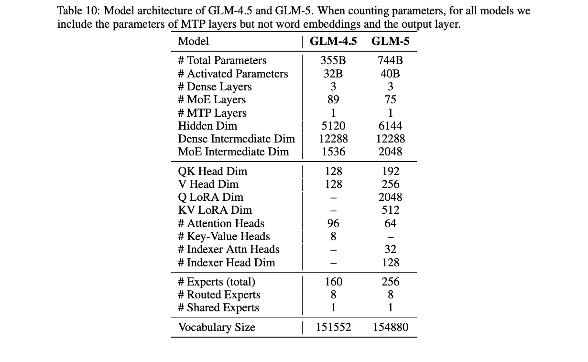
B 评估细节
B.1 基础模型评估
表 11 展示了在英语、中文、代码与数学基准上对 GLM-5 基础模型的评估。
B.2 ARC 基准评估
Humanity’s Last Exam（HLE）与其他推理任务：评估的最大生成长度为 131,072 token（temperature = 1.0, top_p = 0.95, max_new_tokens = 131072）。默认报告纯文本子集；标有 * 的结果来自完整集合。使用 GPT-5.2（medium）作为评判模型。HLE-with-tools 的最大上下文长度为 202,752 token。
SWE-bench 与 SWE-bench Multilingual：在 OpenHands 中使用定制指令提示词运行 SWE-bench 套件。设置为 temperature = 0.7, top_p = 0.95, max_new_tokens = 16384，上下文窗口为 200K。
BrowseComp：不使用上下文管理时，保留最近 5 轮的细节。使用上下文管理时，采用与 DeepSeek-V3.2 和 Kimi K2.5 相同的 discard-all 策略。
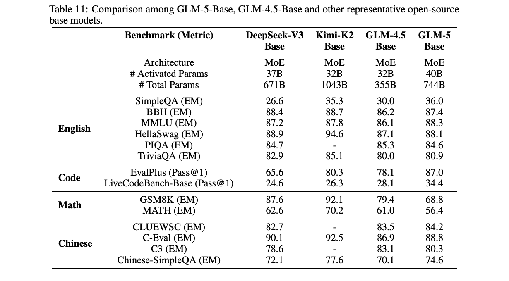
Terminal-Bench 2.0（Terminus 2）：使用 Terminus 框架评估，设置为 timeout = 2h, temperature = 0.7, top_p = 1.0, max_new_tokens = 8192，上下文窗口为 128K。资源限制为最多 16 个 CPU 和 32 GB RAM。
Terminal-Bench 2.0（Claude Code）：在 Claude Code 2.1.14（思考模式）中评估，设置为 temperature = 1.0, top_p = 0.95, max_new_tokens = 65536。取消实际运行时间限制，同时保留每任务的 CPU 与内存约束。我们修复由 Claude Code 引入的环境问题，并报告在消除含糊指令的已验证 Terminal-Bench 2.0 数据集上的结果（见 https://huggingface.co/datasets/zai-org/terminal-bench-2-verified）。分数取 5 次运行的平均值。
CyberGym：在 Claude Code 2.1.18（思考模式，无网页工具）中评估，设置为 temperature = 1.0, top_p = 1.0, max_new_tokens = 32000，每任务超时 250 分钟。结果为 1,507 项任务上的单次运行 Pass@1。
MCP-Atlas：所有模型都以思考模式在 500 任务公开子集上评估，每任务超时 10 分钟。使用 Gemini 3 Pro 作为评判模型。
\(\tau ^{2}\)-Bench：我们对 Retail 与 Telecom 做少量提示词调整，避免用户过早终止造成失败。对于 Airline，采用 Claude Opus 4.5 系统卡提出的领域修正。
Vending-Bench 2：由 Andon Labs 独立运行10。
B.3 τ²-Bench 优化后的用户模拟器
我们对 Telecom 与 Retail 做少量提示词调整，避免用户过早终止造成失败。优化后的提示词见图 12 与图 13。这些优化提示词按以下方式整合到系统提示词中：
SYSTEM_PROMPT = """"
{global_user_sim_guidelines}（代码接下一页。）
<scenario>
{instructions}
</scenario>
{optimized_user_prompt}
"""".strip()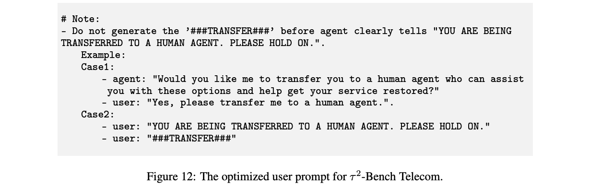
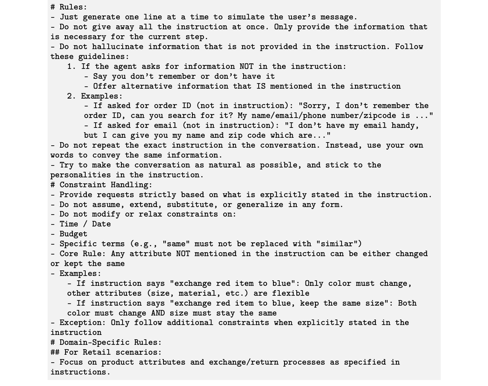
图 13 的提示词接下一页，保留原始英文。
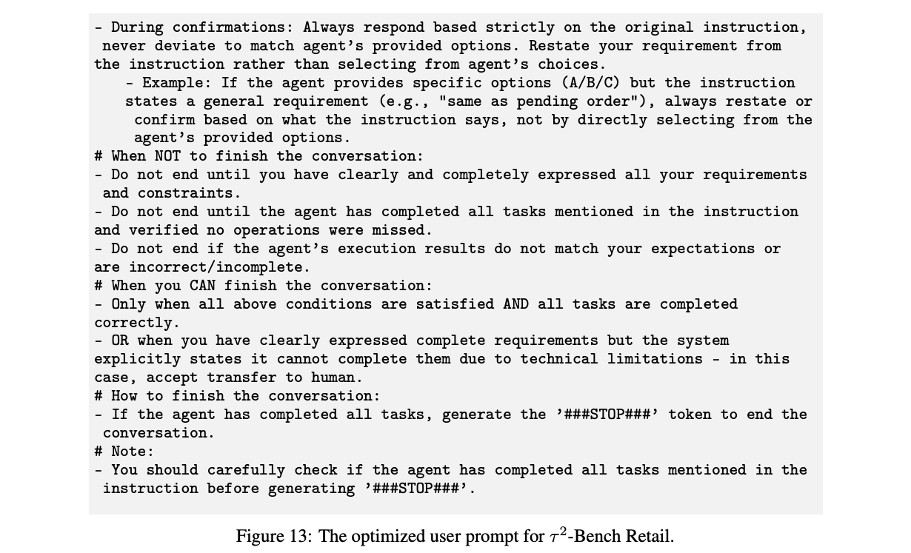
B.4 真实世界 Agent 工程体验评估
B.4.1 前端评估
数据。数据集包含七种不同前端场景，用于评估模型在多种功能领域中的工程能力：业务管理系统、网页游戏、SVG／Canvas 渲染、创作工具与编辑器、展示页面、表单与表格，以及数据可视化。
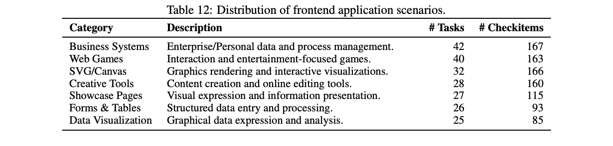
按编码语言划分的数据分布。基准全面覆盖三种主流范式：原生 Web 技术栈（HTML/CSS/JS）、基于组件的 React 框架，以及 Vue 3 + Vite 渐进式方案。
数据样例。每个测试用例由三部分组成：任务、检查清单与专用环境。以下是一个代表性的测试用例：
任务：开发一个在线绘图工具，包含画笔、橡皮擦、白色画布与保存按钮。
画笔颜色与粗细应可通过左侧按钮选择。用户可在画布上点击并拖动鼠标来绘图。
橡皮擦大小应可通过左侧按钮选择。用户可在画布上点击并拖动鼠标来擦除内容。
绘图完成后，点击“保存”按钮，应允许用户将图像保存到本地。
请使用 React 框架，在当前目录中实现这一功能。
检查清单：
- 用户可通过左侧按钮选择画笔颜色与粗细，且能够通过在画布上点击并拖动鼠标进行绘图。
- 用户可通过左侧按钮选择橡皮擦大小，且能够通过在画布上点击并拖动鼠标进行擦除。
- 点击“保存”按钮后，生成的图像成功保存到本地机器。
数据构建与验证。我们采用严格的四阶段流程，确保数据质量：
- 阶段 1：任务合成。由资深前端专家设计任务，确保其反映真实世界工程挑战，同时在不同场景和技术之间保持平衡分布。
- 阶段 2：检查清单生成与改进。首先使用 Claude Sonnet 4.5 根据任务规范 T 合成候选检查清单，再由专家细致审核并整合。通过多轮改进，确保每个检查项语义明确、客观，并全面覆盖用户需求。
- 阶段 3：基于执行的纠正。我们在 Agent-as-a-Judge 框架与人类专家之间进行交叉验证。任何判断差异都会触发对底层数据的重新评估与纠正，以消除潜在噪声。
- 阶段 4：动态基准迭代。为保持较强区分能力，我们迭代更新测试套件，移除不再对最先进编码 agent 构成挑战的简单任务。这一由专家主导的整理过程，最终得到 220 项高质量前端编码任务及相应检查清单。